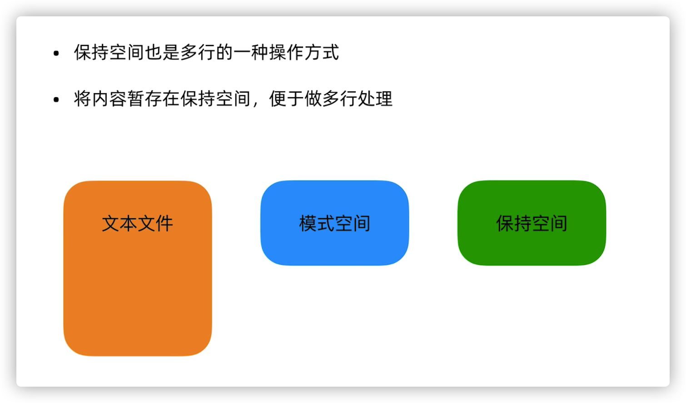

<!DOCTYPE html><html lang="zh-CN" data-theme="light"><head><meta charset="UTF-8"><meta http-equiv="X-UA-Compatible" content="IE=edge"><meta name="viewport" content="width=device-width, initial-scale=1.0, maximum-scale=1.0, user-scalable=no"><title>Linux 学习笔记 | 鱼丸粗面的博客</title><meta name="keywords" content="Linux"><meta name="author" content="KaKa"><meta name="copyright" content="KaKa"><meta name="format-detection" content="telephone=no"><meta name="theme-color" content="#ffffff"><meta name="description" content="Linux笔记 基础命令 创建多个嵌套目录 mkdir -p a&#x2F;b&#x2F;c  查看嵌套目录 ls -R .&#x2F; ls -h会显示文件的大小  复制文件保留元信息（复制文件默认会修改文件的元信息） cp -a a b  通配符，只匹配一个字符 ls a? # 会匹配ab 不会匹配abc  打包文件，解包文件 # 打包文件 tar cf xxx.tar &#x2F;a  # 解包文件 tar xf xxx.tar">
<meta property="og:type" content="article">
<meta property="og:title" content="Linux 学习笔记">
<meta property="og:url" content="https://qiuqideblog.com/2020/09/05/linux-bi-ji/index.html">
<meta property="og:site_name" content="鱼丸粗面的博客">
<meta property="og:description" content="Linux笔记 基础命令 创建多个嵌套目录 mkdir -p a&#x2F;b&#x2F;c  查看嵌套目录 ls -R .&#x2F; ls -h会显示文件的大小  复制文件保留元信息（复制文件默认会修改文件的元信息） cp -a a b  通配符，只匹配一个字符 ls a? # 会匹配ab 不会匹配abc  打包文件，解包文件 # 打包文件 tar cf xxx.tar &#x2F;a  # 解包文件 tar xf xxx.tar">
<meta property="og:locale" content="zh_CN">
<meta property="og:image" content="https://blog-img-1256171178.cos.ap-beijing.myqcloud.com/Linux%20%E5%AD%A6%E4%B9%A0%E7%AC%94%E8%AE%B0%2Fthumbnail.png">
<meta property="article:published_time" content="2020-09-05T08:47:41.000Z">
<meta property="article:modified_time" content="2022-05-13T08:17:52.363Z">
<meta property="article:author" content="KaKa">
<meta property="article:tag" content="Linux">
<meta name="twitter:card" content="summary">
<meta name="twitter:image" content="https://blog-img-1256171178.cos.ap-beijing.myqcloud.com/Linux%20%E5%AD%A6%E4%B9%A0%E7%AC%94%E8%AE%B0%2Fthumbnail.png"><link rel="shortcut icon" href="https://blog-img-1256171178.cos.ap-beijing.myqcloud.com/public/avatar.png"><link rel="canonical" href="https://qiuqideblog.com/2020/09/05/linux-bi-ji/"><link rel="preconnect" href="//cdn.jsdelivr.net"/><link rel="preconnect" href="//busuanzi.ibruce.info"/><link rel="stylesheet" href="/css/index.css"><link rel="stylesheet" href="https://cdn.jsdelivr.net/npm/@fortawesome/fontawesome-free@6/css/all.min.css" media="print" onload="this.media='all'"><link rel="stylesheet" href="https://cdn.jsdelivr.net/npm/node-snackbar/dist/snackbar.min.css" media="print" onload="this.media='all'"><link rel="stylesheet" href="https://cdn.jsdelivr.net/npm/@fancyapps/ui/dist/fancybox.css" media="print" onload="this.media='all'"><script>const GLOBAL_CONFIG = { 
  root: '/',
  algolia: undefined,
  localSearch: {"path":"/search.xml","preload":true,"languages":{"hits_empty":"找不到您查询的内容：${query}"}},
  translate: undefined,
  noticeOutdate: undefined,
  highlight: undefined,
  copy: {
    success: '复制成功',
    error: '复制错误',
    noSupport: '浏览器不支持'
  },
  relativeDate: {
    homepage: false,
    post: false
  },
  runtime: '',
  date_suffix: {
    just: '刚刚',
    min: '分钟前',
    hour: '小时前',
    day: '天前',
    month: '个月前'
  },
  copyright: undefined,
  lightbox: 'fancybox',
  Snackbar: {"chs_to_cht":"你已切换为繁体","cht_to_chs":"你已切换为简体","day_to_night":"你已切换为深色模式","night_to_day":"你已切换为浅色模式","bgLight":"#49b1f5","bgDark":"#121212","position":"bottom-left"},
  source: {
    justifiedGallery: {
      js: 'https://cdn.jsdelivr.net/npm/flickr-justified-gallery@2/dist/fjGallery.min.js',
      css: 'https://cdn.jsdelivr.net/npm/flickr-justified-gallery@2/dist/fjGallery.min.css'
    }
  },
  isPhotoFigcaption: true,
  islazyload: false,
  isAnchor: true
}</script><script id="config-diff">var GLOBAL_CONFIG_SITE = {
  title: 'Linux 学习笔记',
  isPost: true,
  isHome: false,
  isHighlightShrink: true,
  isToc: true,
  postUpdate: '2022-05-13 16:17:52'
}</script><noscript><style type="text/css">
  #nav {
    opacity: 1
  }
  .justified-gallery img {
    opacity: 1
  }

  #recent-posts time,
  #post-meta time {
    display: inline !important
  }
</style></noscript><script>(win=>{
    win.saveToLocal = {
      set: function setWithExpiry(key, value, ttl) {
        if (ttl === 0) return
        const now = new Date()
        const expiryDay = ttl * 86400000
        const item = {
          value: value,
          expiry: now.getTime() + expiryDay,
        }
        localStorage.setItem(key, JSON.stringify(item))
      },

      get: function getWithExpiry(key) {
        const itemStr = localStorage.getItem(key)

        if (!itemStr) {
          return undefined
        }
        const item = JSON.parse(itemStr)
        const now = new Date()

        if (now.getTime() > item.expiry) {
          localStorage.removeItem(key)
          return undefined
        }
        return item.value
      }
    }
  
    win.getScript = url => new Promise((resolve, reject) => {
      const script = document.createElement('script')
      script.src = url
      script.async = true
      script.onerror = reject
      script.onload = script.onreadystatechange = function() {
        const loadState = this.readyState
        if (loadState && loadState !== 'loaded' && loadState !== 'complete') return
        script.onload = script.onreadystatechange = null
        resolve()
      }
      document.head.appendChild(script)
    })
  
      win.activateDarkMode = function () {
        document.documentElement.setAttribute('data-theme', 'dark')
        if (document.querySelector('meta[name="theme-color"]') !== null) {
          document.querySelector('meta[name="theme-color"]').setAttribute('content', '#0d0d0d')
        }
      }
      win.activateLightMode = function () {
        document.documentElement.setAttribute('data-theme', 'light')
        if (document.querySelector('meta[name="theme-color"]') !== null) {
          document.querySelector('meta[name="theme-color"]').setAttribute('content', '#ffffff')
        }
      }
      const t = saveToLocal.get('theme')
    
          if (t === 'dark') activateDarkMode()
          else if (t === 'light') activateLightMode()
        
      const asideStatus = saveToLocal.get('aside-status')
      if (asideStatus !== undefined) {
        if (asideStatus === 'hide') {
          document.documentElement.classList.add('hide-aside')
        } else {
          document.documentElement.classList.remove('hide-aside')
        }
      }
    
    const detectApple = () => {
      if(/iPad|iPhone|iPod|Macintosh/.test(navigator.userAgent)){
        document.documentElement.classList.add('apple')
      }
    }
    detectApple()
    })(window)</script><meta name="generator" content="Hexo 5.4.0"><link rel="stylesheet" href="/css/prism-tomorrow.css" type="text/css">
<link rel="stylesheet" href="/css/prism-line-numbers.css" type="text/css"></head><body><div id="loading-box"><div class="loading-left-bg"></div><div class="loading-right-bg"></div><div class="spinner-box"><div class="configure-border-1"><div class="configure-core"></div></div><div class="configure-border-2"><div class="configure-core"></div></div><div class="loading-word">加载中...</div></div></div><div id="web_bg"></div><div id="sidebar"><div id="menu-mask"></div><div id="sidebar-menus"><div class="avatar-img is-center"></div><div class="sidebar-site-data site-data is-center"><a href="/archives/"><div class="headline">文章</div><div class="length-num">23</div></a><a href="/tags/"><div class="headline">标签</div><div class="length-num">18</div></a><a href="/categories/"><div class="headline">分类</div><div class="length-num">13</div></a></div><hr/><div class="menus_items"><div class="menus_item"><a class="site-page" href="/"><i class="fa-fw fas fa-home"></i><span> 主页</span></a></div><div class="menus_item"><a class="site-page" href="/archives/"><i class="fa-fw fas fa-archive"></i><span> 归档</span></a></div><div class="menus_item"><a class="site-page" href="/tags/"><i class="fa-fw fas fa-tags"></i><span> 标签</span></a></div><div class="menus_item"><a class="site-page" href="/categories/"><i class="fa-fw fas fa-folder-open"></i><span> 分类</span></a></div></div></div></div><div class="post" id="body-wrap"><header class="not-top-img" id="page-header"><nav id="nav"><span id="blog_name"><a id="site-name" href="/">鱼丸粗面的博客</a></span><div id="menus"><div id="search-button"><a class="site-page social-icon search"><i class="fas fa-search fa-fw"></i><span> 搜索</span></a></div><div class="menus_items"><div class="menus_item"><a class="site-page" href="/"><i class="fa-fw fas fa-home"></i><span> 主页</span></a></div><div class="menus_item"><a class="site-page" href="/archives/"><i class="fa-fw fas fa-archive"></i><span> 归档</span></a></div><div class="menus_item"><a class="site-page" href="/tags/"><i class="fa-fw fas fa-tags"></i><span> 标签</span></a></div><div class="menus_item"><a class="site-page" href="/categories/"><i class="fa-fw fas fa-folder-open"></i><span> 分类</span></a></div></div><div id="toggle-menu"><a class="site-page"><i class="fas fa-bars fa-fw"></i></a></div></div></nav></header><main class="layout" id="content-inner"><div id="post"><div id="post-info"><h1 class="post-title">Linux 学习笔记</h1><div id="post-meta"><div class="meta-firstline"><span class="post-meta-date"><i class="far fa-calendar-alt fa-fw post-meta-icon"></i><span class="post-meta-label">发表于</span><time class="post-meta-date-created" datetime="2020-09-05T08:47:41.000Z" title="发表于 2020-09-05 16:47:41">2020-09-05</time><span class="post-meta-separator">|</span><i class="fas fa-history fa-fw post-meta-icon"></i><span class="post-meta-label">更新于</span><time class="post-meta-date-updated" datetime="2022-05-13T08:17:52.363Z" title="更新于 2022-05-13 16:17:52">2022-05-13</time></span><span class="post-meta-categories"><span class="post-meta-separator">|</span><i class="fas fa-inbox fa-fw post-meta-icon"></i><a class="post-meta-categories" href="/categories/%E7%AC%94%E8%AE%B0/">笔记</a></span></div><div class="meta-secondline"><span class="post-meta-separator">|</span><span class="post-meta-wordcount"><i class="far fa-file-word fa-fw post-meta-icon"></i><span class="post-meta-label">字数总计:</span><span class="word-count">9.1k</span><span class="post-meta-separator">|</span><i class="far fa-clock fa-fw post-meta-icon"></i><span class="post-meta-label">阅读时长:</span><span>39分钟</span></span><span class="post-meta-separator">|</span><span class="post-meta-pv-cv" id="" data-flag-title="Linux 学习笔记"><i class="far fa-eye fa-fw post-meta-icon"></i><span class="post-meta-label">阅读量:</span><span id="busuanzi_value_page_pv"></span></span></div></div></div><article class="post-content" id="article-container"><p>Linux笔记</p>
<h3 id="基础命令"><a href="#基础命令" class="headerlink" title="基础命令"></a>基础命令</h3><ul>
<li><p>创建多个嵌套目录</p>
<pre class="line-numbers language-bash"><code class="language-bash"><span class="token function">mkdir</span> -p a/b/c<span aria-hidden="true" class="line-numbers-rows"><span></span></span></code></pre>
</li>
<li><p>查看嵌套目录</p>
<pre class="line-numbers language-bash"><code class="language-bash"><span class="token function">ls</span> -R ./<span aria-hidden="true" class="line-numbers-rows"><span></span></span></code></pre>
<p><code>ls -h</code>会显示文件的大小</p>
</li>
<li><p>复制文件保留元信息（复制文件默认会修改文件的元信息）</p>
<pre class="line-numbers language-bash"><code class="language-bash"><span class="token function">cp</span> -a a b<span aria-hidden="true" class="line-numbers-rows"><span></span></span></code></pre>
</li>
<li><p>通配符，只匹配一个字符</p>
<pre class="line-numbers language-bash"><code class="language-bash"><span class="token function">ls</span> a?
<span class="token comment" spellcheck="true"># 会匹配ab 不会匹配abc</span><span aria-hidden="true" class="line-numbers-rows"><span></span><span></span></span></code></pre>
</li>
<li><p>打包文件，解包文件</p>
<pre class="line-numbers language-bash"><code class="language-bash"><span class="token comment" spellcheck="true"># 打包文件</span>
<span class="token function">tar</span> cf xxx.tar /a

<span class="token comment" spellcheck="true"># 解包文件</span>
<span class="token function">tar</span> xf xxx.tar -C /a<span aria-hidden="true" class="line-numbers-rows"><span></span><span></span><span></span><span></span><span></span></span></code></pre>
<p>将a目录下的文件打包成xxx.tar文件,<code>f</code>表示打包成文件</p>
<p><code>tar</code>命令的参数是不带<code>-</code>的</p>
</li>
<li><p>压缩文件，解压文件</p>
<pre class="line-numbers language-bash"><code class="language-bash"><span class="token comment" spellcheck="true"># gzip压缩文件，打包文件加压缩</span>
<span class="token function">tar</span> czf xxx.tar.gz /a

<span class="token comment" spellcheck="true">#解压文件</span>
<span class="token function">tar</span> xzf xxx.tar.gz -C /a

<span class="token comment" spellcheck="true"># bzip2压缩文件，打包文件加压缩</span>
<span class="token function">tar</span> cjf xxx.tar.bz2 /a

<span class="token comment" spellcheck="true">#解压文件</span>
<span class="token function">tar</span> xjf xx.tar.gz _v /a<span aria-hidden="true" class="line-numbers-rows"><span></span><span></span><span></span><span></span><span></span><span></span><span></span><span></span><span></span><span></span><span></span></span></code></pre>
<p>bzip2压缩的文件方式要比gzip小，压缩比例更高</p>
</li>
</ul>
<h3 id="vim"><a href="#vim" class="headerlink" title="vim"></a>vim</h3><h5 id="进入插入模式："><a href="#进入插入模式：" class="headerlink" title="进入插入模式："></a>进入插入模式：</h5><p><code>-i</code>：当前位置进入插入模式</p>
<p><code>-I</code>：跳转到行前进入插入模式</p>
<p><code>-a</code>：跳转到下一个字符进入插入模式</p>
<p><code>-A</code>：跳转到行尾进入插入模式</p>
<p><code>-o</code>：下一行进入插入模式</p>
<p><code>-O</code>：上一行进入插入模式</p>
<h4 id="命令行模式"><a href="#命令行模式" class="headerlink" title="命令行模式"></a>命令行模式</h4><p><code>!</code>：可以执行linux命令</p>
<p><code>:s/a/b</code>：对当前行进行替换</p>
<p><code>:%s/a/b/g</code>：对所有符合条件的内容进行替换</p>
<p><code>:10,25s/a.b/g</code>：对10-25行中的内容进行替换</p>
<h4 id="可视模式"><a href="#可视模式" class="headerlink" title="可视模式"></a>可视模式</h4><p><code>v</code>：字符可视模式</p>
<p><code>V</code>：行可视模式</p>
<p><code>^+v</code>：块可视模式</p>
<p><code>I</code>：可以在快模式下编辑多行，编辑完后按两下<code>esc</code>键，修改就会同步到其他行</p>
<p><code>d</code>：在快模式下，删除多行选中的字符</p>
<h4 id="复制"><a href="#复制" class="headerlink" title="复制"></a>复制</h4><p><code>yy</code>：复制正行</p>
<p><code>n yy</code>：复制n行</p>
<p><code>y$</code>：从当前字符复制到行尾</p>
<p><code>p</code>：粘贴</p>
<h4 id="剪切"><a href="#剪切" class="headerlink" title="剪切"></a>剪切</h4><p><code>dd</code>：剪切整行</p>
<p><code>n dd</code>：剪切n行</p>
<p><code>d$</code>：剪切当前字符到行尾</p>
<h4 id="撤销"><a href="#撤销" class="headerlink" title="撤销"></a>撤销</h4><p><code>u</code>：撤销</p>
<p><code>^+r</code>：反向撤销</p>
<h4 id="替换"><a href="#替换" class="headerlink" title="替换"></a>替换</h4><p><code>r</code>：替换单个字符</p>
<p><code>x</code>：删除单个字符</p>
<h4 id="跳转到指定行"><a href="#跳转到指定行" class="headerlink" title="跳转到指定行"></a>跳转到指定行</h4><p><code>n G</code>：跳转到第n行</p>
<p><code>gg</code>：跳转到第一行</p>
<p><code>G</code>：跳转到最后一行</p>
<p><code>$</code>：跳转到该行的行尾</p>
<p><code>^</code>：跳转到该行的行首</p>
<h3 id="用户管理"><a href="#用户管理" class="headerlink" title="用户管理"></a>用户管理</h3><h4 id="添加用户（需要在root用户下执行，其他普通用户无法创建用户）"><a href="#添加用户（需要在root用户下执行，其他普通用户无法创建用户）" class="headerlink" title="添加用户（需要在root用户下执行，其他普通用户无法创建用户）"></a>添加用户（需要在root用户下执行，其他普通用户无法创建用户）</h4><pre class="line-numbers language-bash"><code class="language-bash"><span class="token comment" spellcheck="true"># 不会创建用户目录、设定密码等</span>
<span class="token function">useradd</span> abc

<span class="token comment" spellcheck="true"># 会创建用户目录、设定密码等</span>
adduser abc<span aria-hidden="true" class="line-numbers-rows"><span></span><span></span><span></span><span></span><span></span></span></code></pre>
<h4 id="设置密码"><a href="#设置密码" class="headerlink" title="设置密码"></a>设置密码</h4><pre class="line-numbers language-bash"><code class="language-bash"><span class="token function">passwd</span> abc<span aria-hidden="true" class="line-numbers-rows"><span></span></span></code></pre>
<h4 id="查看某一个用户是否存在"><a href="#查看某一个用户是否存在" class="headerlink" title="查看某一个用户是否存在"></a>查看某一个用户是否存在</h4><pre class="line-numbers language-bash"><code class="language-bash"><span class="token function">id</span> abc
<span class="token comment" spellcheck="true"># uid=0(root) gid=0(root) groups=0(root),113(docker)</span><span aria-hidden="true" class="line-numbers-rows"><span></span><span></span></span></code></pre>
<h4 id="添加用户会进过那些操作"><a href="#添加用户会进过那些操作" class="headerlink" title="添加用户会进过那些操作"></a>添加用户会进过那些操作</h4><ol>
<li><p>会在<code>/etc/passwd</code>中添加用户</p>
<pre class="line-numbers language-bash"><code class="language-bash"><span class="token function">cat</span> /etc/passwd
<span class="token comment" spellcheck="true"># abc:x:1002:1002::/home/abc:/bin/sh</span><span aria-hidden="true" class="line-numbers-rows"><span></span><span></span></span></code></pre>
</li>
<li><p>会在<code>/etc/shadow</code>中添加用户</p>
<pre class="line-numbers language-bash"><code class="language-bash"><span class="token function">cat</span> /etc/shadow
<span class="token comment" spellcheck="true"># abc:!:18510:0:99999:7:::</span><span aria-hidden="true" class="line-numbers-rows"><span></span><span></span></span></code></pre>
</li>
</ol>
<h4 id="删除用户"><a href="#删除用户" class="headerlink" title="删除用户"></a>删除用户</h4><pre class="line-numbers language-bash"><code class="language-bash"><span class="token comment" spellcheck="true"># 不会删除用户目录</span>
<span class="token function">userdel</span> abc

<span class="token comment" spellcheck="true"># 删除用户目录</span>
<span class="token function">userdel</span> -r abc<span aria-hidden="true" class="line-numbers-rows"><span></span><span></span><span></span><span></span><span></span></span></code></pre>
<h4 id="修改用户属性"><a href="#修改用户属性" class="headerlink" title="修改用户属性"></a>修改用户属性</h4><p>修改用户目录</p>
<pre class="line-numbers language-bash"><code class="language-bash"><span class="token function">usermod</span> -d /home/dd abc<span aria-hidden="true" class="line-numbers-rows"><span></span></span></code></pre>
<p>修改用户所属的组</p>
<pre class="line-numbers language-bash"><code class="language-bash"><span class="token function">usermod</span> -g group1 abc<span aria-hidden="true" class="line-numbers-rows"><span></span></span></code></pre>
<h4 id="新建用户组"><a href="#新建用户组" class="headerlink" title="新建用户组"></a>新建用户组</h4><pre class="line-numbers language-bash"><code class="language-bash"><span class="token function">groupadd</span> group1<span aria-hidden="true" class="line-numbers-rows"><span></span></span></code></pre>
<h4 id="切换用户"><a href="#切换用户" class="headerlink" title="切换用户"></a>切换用户</h4><pre class="line-numbers language-bash"><code class="language-bash"><span class="token function">su</span> - abc<span aria-hidden="true" class="line-numbers-rows"><span></span></span></code></pre>
<p><code>-</code>表示完全切换，会切换到该用户的目录下，如果没有<code>-</code>则还会在当前目录</p>
<h4 id="给特定用户执行某些命令的权限"><a href="#给特定用户执行某些命令的权限" class="headerlink" title="给特定用户执行某些命令的权限"></a>给特定用户执行某些命令的权限</h4><pre class="line-numbers language-bash"><code class="language-bash">visudo<span aria-hidden="true" class="line-numbers-rows"><span></span></span></code></pre>
<p>用上面的命令可以给某些用户赋予某些命令的权限</p>
<h4 id="etc-passwd文件解析"><a href="#etc-passwd文件解析" class="headerlink" title="/etc/passwd文件解析"></a>/etc/passwd文件解析</h4><pre class="line-numbers language-bash"><code class="language-bash">root:x:0:0:root:/root:/bin/bash
daemon:x:1:1:daemon:/usr/sbin:/usr/sbin/nologin
bin:x:2:2:bin:/bin:/usr/sbin/nologin

<span class="token comment" spellcheck="true"># 用户名/用户是否需要密码进行验证/uid/gid/注释/用户目录/命令解释器</span>
<span class="token comment" spellcheck="true"># sbin/nologin 是不能被登录的</span><span aria-hidden="true" class="line-numbers-rows"><span></span><span></span><span></span><span></span><span></span><span></span></span></code></pre>
<p>在新建用户时可以不用<code>adduser</code>命令，直接编辑该文件也可以起到新增用户的目的</p>
<h4 id="etc-shadow-文件解析（用来保存用户和密码的关系）"><a href="#etc-shadow-文件解析（用来保存用户和密码的关系）" class="headerlink" title="/etc/shadow 文件解析（用来保存用户和密码的关系）"></a>/etc/shadow 文件解析（用来保存用户和密码的关系）</h4><pre class="line-numbers language-bash"><code class="language-bash">mysql:<span class="token operator">!</span>:18493424:0:99999:7:::
user1:<span class="token variable">$6</span><span class="token variable">$9JTohwDk</span><span class="token variable">$baTsdfsVJRRfSds6PCdF0xBQlqslTekjWK9xT7</span>/yIoTTUv45raWwtZRpwtMn5mNwjULCvL2XRJ9Nj3kFhekJBsjgBfq.:18511:0:99999:7:::

<span class="token comment" spellcheck="true"># 用户名/加密后的密码</span>

<span class="token comment" spellcheck="true"># 相同的密码加密后是不同的</span><span aria-hidden="true" class="line-numbers-rows"><span></span><span></span><span></span><span></span><span></span><span></span></span></code></pre>
<h4 id="etc-group-文件解析（用户组文件）"><a href="#etc-group-文件解析（用户组文件）" class="headerlink" title="/etc/group 文件解析（用户组文件）"></a>/etc/group 文件解析（用户组文件）</h4><pre class="line-numbers language-bash"><code class="language-bash">mysql:x:116:
user1:x:1002:

<span class="token comment" spellcheck="true"># 用户组名称/是否需要密码/gid/其他组设置(一个用户可以属于多个组)</span><span aria-hidden="true" class="line-numbers-rows"><span></span><span></span><span></span><span></span></span></code></pre>
<h3 id="文件权限"><a href="#文件权限" class="headerlink" title="文件权限"></a>文件权限</h3><h4 id="文件权限格式"><a href="#文件权限格式" class="headerlink" title="文件权限格式"></a>文件权限格式</h4><pre class="line-numbers language-bash"><code class="language-bash"><span class="token function">ls</span> -l

-rwx------+   8 xx  staff      256 Mar  6  2020 Movies
drwx------+  10 xx  staff      320 Mar  6  2020 Music

<span class="token comment" spellcheck="true"># 第一位，表示文件类型</span>
<span class="token comment" spellcheck="true"># 后面接着的9位 rwx------ 表示权限，每三个字符为一组，分别表示：用户对该文件的权限、该组对文件的权限和其他用户的权限</span>
<span class="token comment" spellcheck="true"># xx ：用户</span>
<span class="token comment" spellcheck="true"># staff： 用户组</span><span aria-hidden="true" class="line-numbers-rows"><span></span><span></span><span></span><span></span><span></span><span></span><span></span><span></span><span></span></span></code></pre>
<h4 id="文件类型"><a href="#文件类型" class="headerlink" title="文件类型"></a>文件类型</h4><p><code>-</code>：普通文件</p>
<p><code>d</code>：目录文件</p>
<p><code>b</code>：块特殊文件</p>
<p><code>c</code>：字符特殊文件</p>
<p><code>l</code>：符号链接</p>
<p><code>f</code>：命令管道</p>
<p><code>s</code>：套接字文件</p>
<h4 id="文件权限的表示方法"><a href="#文件权限的表示方法" class="headerlink" title="文件权限的表示方法"></a>文件权限的表示方法</h4><p>数字权限的表示方法</p>
<p>r=4</p>
<p>w=2</p>
<p>x=1</p>
<h4 id="目录权限的表示方法"><a href="#目录权限的表示方法" class="headerlink" title="目录权限的表示方法"></a>目录权限的表示方法</h4><p><code>x</code>：可以进入目录</p>
<p><code>rx</code>：显示目录内的文件名</p>
<p><code>wx</code>：修改目录内的文件名</p>
<h4 id="修改文件属主和属组的方法"><a href="#修改文件属主和属组的方法" class="headerlink" title="修改文件属主和属组的方法"></a>修改文件属主和属组的方法</h4><p>修改属主</p>
<pre class="line-numbers language-bash"><code class="language-bash"><span class="token function">chown</span> user1 /test<span aria-hidden="true" class="line-numbers-rows"><span></span></span></code></pre>
<p>修改属组</p>
<pre class="line-numbers language-bash"><code class="language-bash"><span class="token function">chgrp</span> :user1 /test<span aria-hidden="true" class="line-numbers-rows"><span></span></span></code></pre>
<h4 id="修改权限"><a href="#修改权限" class="headerlink" title="修改权限"></a>修改权限</h4><p><code>u</code>：属主</p>
<p><code>g</code>：属组</p>
<p><code>o</code>：其他用户</p>
<p><code>a</code>：包括上述三种</p>
<p><code>+</code>：增加权限</p>
<p><code>-</code>：减少权限</p>
<p><code>=</code>：设置权限</p>
<pre class="line-numbers language-bash"><code class="language-bash"><span class="token comment" spellcheck="true"># 为test的属主设置w权限</span>
<span class="token function">chmod</span> u+w ./test

<span class="token comment" spellcheck="true"># 为属主、属组合其他用户设置只有wr权限</span>
<span class="token function">chmod</span> a<span class="token operator">=</span>wr ./test<span aria-hidden="true" class="line-numbers-rows"><span></span><span></span><span></span><span></span><span></span></span></code></pre>
<p>linux中默认的文件权限是644,是666-umask(022)=644，既<code>rw-r--r--</code></p>
<p>如果属主权限和属组权限冲突，则以属主权限为主</p>
<h4 id="特殊权限"><a href="#特殊权限" class="headerlink" title="特殊权限"></a>特殊权限</h4><p><code>SUID</code>：用户可执行的二进制文件，执行命令时获取文件属主的权限</p>
<pre class="line-numbers language-bash"><code class="language-bash">root@master:~<span class="token comment" spellcheck="true"># ls -l /usr/bin/passwd</span>
-rwsr-xr-x 1 root root 59640 Mar 23  2019 /usr/bin/passwd<span aria-hidden="true" class="line-numbers-rows"><span></span><span></span></span></code></pre>
<p><code>SGID</code>：用于目录，在该目录下新建的文件和目录，权限自动更改为该目录的属组，常用于共享文件</p>
<p><code>SBIT</code>：用户目录，在该目录下新建的文件和目录，只有root和自己可以删除</p>
<pre class="line-numbers language-bash"><code class="language-bash"><span class="token function">ls</span> -l /
drwxrwxrwt  13 root root       4096 Sep  7 18:21 tmp<span aria-hidden="true" class="line-numbers-rows"><span></span><span></span></span></code></pre>
<h3 id="网络管理"><a href="#网络管理" class="headerlink" title="网络管理"></a>网络管理</h3><h4 id="网络状态查看工具"><a href="#网络状态查看工具" class="headerlink" title="网络状态查看工具"></a>网络状态查看工具</h4><ol>
<li><p>net-tools(centos 7 之前推荐的工具)</p>
<ul>
<li>ifconfig</li>
<li>route</li>
<li>netstat</li>
</ul>
<h5 id="ifconfig"><a href="#ifconfig" class="headerlink" title="ifconfig"></a>ifconfig</h5><ul>
<li>eth0 第一块网卡（根据网卡接入方式不同，名称也会不同）</li>
</ul>
</li>
<li><p>iproute2(centos 7 之后推荐的工具)</p>
<ul>
<li>ip</li>
<li>ss</li>
</ul>
</li>
</ol>
<h4 id="修改网卡名称为eth0"><a href="#修改网卡名称为eth0" class="headerlink" title="修改网卡名称为eth0"></a>修改网卡名称为eth0</h4><p>网卡命名规则受<code>biosdevname</code>和<code>net.ifnames</code>两个参数影响</p>
<ol>
<li><p>编辑<code>etc/default/grub</code>文件，增加<code>biosdevname=0</code>和<code>net.ifnames=0</code></p>
<pre class="line-numbers language-bash"><code class="language-bash">GRUB_CMDLINE_LINUX<span class="token operator">=</span><span class="token string">"net.ifnames=0 biosdevname=0"</span><span aria-hidden="true" class="line-numbers-rows"><span></span></span></code></pre>
</li>
<li><p>更新grub</p>
<pre class="line-numbers language-bash"><code class="language-bash">grub2-mkconfig -o /boot/grub2/grub.cfg<span aria-hidden="true" class="line-numbers-rows"><span></span></span></code></pre>
</li>
<li><p>重启(reboot)</p>
</li>
</ol>
<h4 id="查看网卡物理连接情况"><a href="#查看网卡物理连接情况" class="headerlink" title="查看网卡物理连接情况"></a>查看网卡物理连接情况</h4><pre class="line-numbers language-bash"><code class="language-bash">mii-tool eth0<span aria-hidden="true" class="line-numbers-rows"><span></span></span></code></pre>
<h4 id="查看网关"><a href="#查看网关" class="headerlink" title="查看网关"></a>查看网关</h4><pre class="line-numbers language-bash"><code class="language-bash">route -n<span aria-hidden="true" class="line-numbers-rows"><span></span></span></code></pre>
<p>使用<code>-n</code>参数不解析主机名</p>
<h4 id="网络故障排除命令"><a href="#网络故障排除命令" class="headerlink" title="网络故障排除命令"></a>网络故障排除命令</h4><p><code>ping</code>：网络主机是否畅通</p>
<p><code>traceroute</code>：如果网络通畅，但是还是访问不通，可以通过该命令查看路由信息</p>
<p><code>mtr</code>：如果网络主机通畅，但是还是访问不通，可以查看是否有数据包丢失了</p>
<p><code>nslookup</code>：查看域名对应的ip</p>
<p><code>telnet</code>：如果主机没有问题，可以查看端口是否开放</p>
<p><code>tcpdump</code>：如果主机和端口都ok，则需要抓包进行分析</p>
<p><code>netstat</code>和<code>ss</code>：检测服务监听的地址是否正确</p>
<h4 id="网络服务管理-centos"><a href="#网络服务管理-centos" class="headerlink" title="网络服务管理(centos)"></a>网络服务管理(centos)</h4><p>可以分为两种：<code>SysV</code>和<code>systemd</code></p>
<p>网络配置文件：<code>ifcfg-eth0</code>，会随着网卡的不同文件名也会不同</p>
<p>比如<code>/etc/sysconfig/network-scripts/ifcfg-ens3</code>，在这个里面可以配置dhcp，ip等信息</p>
<h3 id="进程管理"><a href="#进程管理" class="headerlink" title="进程管理"></a>进程管理</h3><h4 id="调整优先级"><a href="#调整优先级" class="headerlink" title="调整优先级"></a>调整优先级</h4><p><code>nice</code>：范围从-20到19，值越小优先级越高，抢占的资源就越多</p>
<p><code>renice</code>：重新设置优先级</p>
<pre class="line-numbers language-bash"><code class="language-bash"><span class="token comment" spellcheck="true"># 在启动前设置某一个程序的优先级</span>
<span class="token function">nice</span> -n 10 ./a.sh

<span class="token comment" spellcheck="true"># 在程序启动后重新设置一个程序的优先级</span>
<span class="token function">renice</span> -n 15 pid<span aria-hidden="true" class="line-numbers-rows"><span></span><span></span><span></span><span></span><span></span></span></code></pre>
<h4 id="进程的作业控制"><a href="#进程的作业控制" class="headerlink" title="进程的作业控制"></a>进程的作业控制</h4><p><code>&amp;</code>：将任务放到后台执行</p>
<pre class="line-numbers language-bash"><code class="language-bash">./a.bash <span class="token operator">&amp;</span><span aria-hidden="true" class="line-numbers-rows"><span></span></span></code></pre>
<p><code>jobs</code>:查看后台任务</p>
<pre class="line-numbers language-bash"><code class="language-bash"><span class="token function">jobs</span><span aria-hidden="true" class="line-numbers-rows"><span></span></span></code></pre>
<p>将前台任务停止并放到后台</p>
<p><code>ctrl + z</code></p>
<p>将后台任务放到前台执行</p>
<p><code>fg jobsID</code></p>
<p>将前台任务放到后台执行</p>
<p><code>bg jobsID</code></p>
<h3 id="进程间通信"><a href="#进程间通信" class="headerlink" title="进程间通信"></a>进程间通信</h3><h4 id="查看信号"><a href="#查看信号" class="headerlink" title="查看信号"></a>查看信号</h4><pre class="line-numbers language-bash"><code class="language-bash"><span class="token punctuation">[</span>root@848e7f64efd8 /<span class="token punctuation">]</span><span class="token comment" spellcheck="true"># kill -l</span>
 1<span class="token punctuation">)</span> SIGHUP     2<span class="token punctuation">)</span> SIGINT     3<span class="token punctuation">)</span> SIGQUIT     4<span class="token punctuation">)</span> SIGILL     5<span class="token punctuation">)</span> SIGTRAP
 6<span class="token punctuation">)</span> SIGABRT     7<span class="token punctuation">)</span> SIGBUS     8<span class="token punctuation">)</span> SIGFPE     9<span class="token punctuation">)</span> SIGKILL    10<span class="token punctuation">)</span> SIGUSR1
11<span class="token punctuation">)</span> SIGSEGV    12<span class="token punctuation">)</span> SIGUSR2    13<span class="token punctuation">)</span> SIGPIPE    14<span class="token punctuation">)</span> SIGALRM    15<span class="token punctuation">)</span> SIGTERM
16<span class="token punctuation">)</span> SIGSTKFLT    17<span class="token punctuation">)</span> SIGCHLD    18<span class="token punctuation">)</span> SIGCONT    19<span class="token punctuation">)</span> SIGSTOP    20<span class="token punctuation">)</span> SIGTSTP
21<span class="token punctuation">)</span> SIGTTIN    22<span class="token punctuation">)</span> SIGTTOU    23<span class="token punctuation">)</span> SIGURG    24<span class="token punctuation">)</span> SIGXCPU    25<span class="token punctuation">)</span> SIGXFSZ
26<span class="token punctuation">)</span> SIGVTALRM    27<span class="token punctuation">)</span> SIGPROF    28<span class="token punctuation">)</span> SIGWINCH    29<span class="token punctuation">)</span> SIGIO    30<span class="token punctuation">)</span> SIGPWR
31<span class="token punctuation">)</span> SIGSYS    34<span class="token punctuation">)</span> SIGRTMIN    35<span class="token punctuation">)</span> SIGRTMIN+1    36<span class="token punctuation">)</span> SIGRTMIN+2    37<span class="token punctuation">)</span> SIGRTMIN+3
38<span class="token punctuation">)</span> SIGRTMIN+4    39<span class="token punctuation">)</span> SIGRTMIN+5    40<span class="token punctuation">)</span> SIGRTMIN+6    41<span class="token punctuation">)</span> SIGRTMIN+7    42<span class="token punctuation">)</span> SIGRTMIN+8
43<span class="token punctuation">)</span> SIGRTMIN+9    44<span class="token punctuation">)</span> SIGRTMIN+10    45<span class="token punctuation">)</span> SIGRTMIN+11    46<span class="token punctuation">)</span> SIGRTMIN+12    47<span class="token punctuation">)</span> SIGRTMIN+13
48<span class="token punctuation">)</span> SIGRTMIN+14    49<span class="token punctuation">)</span> SIGRTMIN+15    50<span class="token punctuation">)</span> SIGRTMAX-14    51<span class="token punctuation">)</span> SIGRTMAX-13    52<span class="token punctuation">)</span> SIGRTMAX-12
53<span class="token punctuation">)</span> SIGRTMAX-11    54<span class="token punctuation">)</span> SIGRTMAX-10    55<span class="token punctuation">)</span> SIGRTMAX-9    56<span class="token punctuation">)</span> SIGRTMAX-8    57<span class="token punctuation">)</span> SIGRTMAX-7
58<span class="token punctuation">)</span> SIGRTMAX-6    59<span class="token punctuation">)</span> SIGRTMAX-5    60<span class="token punctuation">)</span> SIGRTMAX-4    61<span class="token punctuation">)</span> SIGRTMAX-3    62<span class="token punctuation">)</span> SIGRTMAX-2<span aria-hidden="true" class="line-numbers-rows"><span></span><span></span><span></span><span></span><span></span><span></span><span></span><span></span><span></span><span></span><span></span><span></span><span></span></span></code></pre>
<h4 id="常用信号"><a href="#常用信号" class="headerlink" title="常用信号"></a>常用信号</h4><pre><code>ctrl + == SIGINT

# 立即终止，不收阻塞，信号是SIGKILL
kill -9 pid</code></pre><h4 id="守护进程（daemon）"><a href="#守护进程（daemon）" class="headerlink" title="守护进程（daemon）"></a>守护进程（daemon）</h4><p>让程序脱离当前终端执行：</p>
<ol>
<li><code>nohup</code></li>
<li>守护进程</li>
<li><code>screen</code>或者<code>tmux</code></li>
</ol>
<p><code>nohup</code>可以让一个命令脱离终端执行，但他不是守护进程</p>
<p>随着系统启动而启动，不用用户手动的去执行</p>
<p>每个进程的依赖的环境都在<code>/proc/pid</code>的文件夹中</p>
<pre class="line-numbers language-bash"><code class="language-bash"><span class="token function">cd</span> /proc/123

<span class="token comment" spellcheck="true"># 进程执行的位置</span>
<span class="token function">ls</span> -l cwd

<span class="token comment" spellcheck="true"># out</span>
 cwd -<span class="token operator">></span> /

<span class="token comment" spellcheck="true"># 进程的输出</span>
<span class="token function">ls</span> -l fd

<span class="token comment" spellcheck="true"># out</span>
lrwx------ 1 root root 64 Sep 14 05:15 0 -<span class="token operator">></span> /dev/pts/4
lrwx------ 1 root root 64 Sep 14 05:15 1 -<span class="token operator">></span> /dev/pts/4
lrwx------ 1 root root 64 Sep 14 05:15 2 -<span class="token operator">></span> /dev/pts/4
lrwx------ 1 root root 64 Sep 14 12:32 255 -<span class="token operator">></span> /dev/pts/4

<span class="token comment" spellcheck="true"># 0是标准输入</span>
<span class="token comment" spellcheck="true"># 1,2是标准输出</span><span aria-hidden="true" class="line-numbers-rows"><span></span><span></span><span></span><span></span><span></span><span></span><span></span><span></span><span></span><span></span><span></span><span></span><span></span><span></span><span></span><span></span><span></span><span></span><span></span></span></code></pre>
<h4 id="服务管理工具-systemctl"><a href="#服务管理工具-systemctl" class="headerlink" title="服务管理工具-systemctl"></a>服务管理工具-systemctl</h4><p>常用操作：</p>
<p><code>systemctl start|stop|restart|reload|enable|disable 服务名称</code></p>
<h4 id="SELinux"><a href="#SELinux" class="headerlink" title="SELinux"></a>SELinux</h4><p>安全增强版本的Linux，以前的linux是利用用户和文件的权限来进行安全控制既DAC（自主访问控制）</p>
<p>MAC（强制访问控制）：会给用户、进程和文件都打上标签，如果三者标签不一致则不允许执行</p>
<p>SElinux是一个内核模块，也是Linux的一个安全子系统。SELinux可是设置DAC或者是MAC。需要注意的是开启SELinux会消耗服务器的性能，所以一般在生产环境下都是关闭的</p>
<pre class="line-numbers language-bash"><code class="language-bash"><span class="token comment" spellcheck="true"># 查看SELinux状态</span>
getenforce<span aria-hidden="true" class="line-numbers-rows"><span></span><span></span></span></code></pre>
<h3 id="内存和磁盘管理"><a href="#内存和磁盘管理" class="headerlink" title="内存和磁盘管理"></a>内存和磁盘管理</h3><h4 id="内存和磁盘使用率查看"><a href="#内存和磁盘使用率查看" class="headerlink" title="内存和磁盘使用率查看"></a>内存和磁盘使用率查看</h4><p>内存：</p>
<ul>
<li><p><code>free</code></p>
<pre class="line-numbers language-bash"><code class="language-bash"><span class="token punctuation">[</span>root@hadoop3 ~<span class="token punctuation">]</span><span class="token comment" spellcheck="true"># free -m</span>
              total        used        <span class="token function">free</span>      shared  buff/cache   available
Mem:          64264       51686        2089         140       10488       11807
Swap:             0           0           0
<span class="token punctuation">[</span>root@hadoop3 ~<span class="token punctuation">]</span><span class="token comment" spellcheck="true"># free -g</span>
              total        used        <span class="token function">free</span>      shared  buff/cache   available
Mem:             62          50           2           0          10          11
Swap:             0           0           0<span aria-hidden="true" class="line-numbers-rows"><span></span><span></span><span></span><span></span><span></span><span></span><span></span><span></span></span></code></pre>
</li>
<li><p><code>top</code></p>
</li>
</ul>
<p>磁盘：</p>
<ul>
<li><p><code>fdisk</code></p>
<pre class="line-numbers language-bash"><code class="language-bash"><span class="token punctuation">[</span>root@hadoop3 ~<span class="token punctuation">]</span><span class="token comment" spellcheck="true"># fdisk -l</span>

Disk /dev/vda: 53.7 GB, 53687091200 bytes, 104857600 sectors
Units <span class="token operator">=</span> sectors of 1 * 512 <span class="token operator">=</span> 512 bytes
Sector size <span class="token punctuation">(</span>logical/physical<span class="token punctuation">)</span>: 512 bytes / 512 bytes
I/O size <span class="token punctuation">(</span>minimum/optimal<span class="token punctuation">)</span>: 512 bytes / 512 bytes
Disk label type: dos
Disk identifier: 0x0009ac89

   Device Boot      Start         End      Blocks   Id  System
/dev/vda1   *        2048   104857566    52427759+  83  Linux

Disk /dev/vdb: 214.7 GB, 214748364800 bytes, 419430400 sectors
Units <span class="token operator">=</span> sectors of 1 * 512 <span class="token operator">=</span> 512 bytes
Sector size <span class="token punctuation">(</span>logical/physical<span class="token punctuation">)</span>: 512 bytes / 512 bytes
I/O size <span class="token punctuation">(</span>minimum/optimal<span class="token punctuation">)</span>: 512 bytes / 512 bytes<span aria-hidden="true" class="line-numbers-rows"><span></span><span></span><span></span><span></span><span></span><span></span><span></span><span></span><span></span><span></span><span></span><span></span><span></span><span></span><span></span><span></span></span></code></pre>
<p>如上图所示，共有两个磁盘：/dev/vda、/dev/vdb</p>
<p>其中/dev/vda是分区了，因为有/dev/vda1</p>
</li>
<li><p><code>df</code></p>
<pre class="line-numbers language-bash"><code class="language-bash"><span class="token function">df</span> -h

Filesystem      Size  Used Avail Use% Mounted on
/dev/vda1        50G   16G   32G  34% /
devtmpfs         32G     0   32G   0% /dev
tmpfs            32G   24K   32G   1% /dev/shm
tmpfs            32G  1.5M   32G   1% /run
tmpfs            32G     0   32G   0% /sys/fs/cgroup
/dev/vdb        197G   55G  134G  29% /data
tmpfs           6.3G     0  6.3G   0% /run/user/0<span aria-hidden="true" class="line-numbers-rows"><span></span><span></span><span></span><span></span><span></span><span></span><span></span><span></span><span></span><span></span></span></code></pre>
<p>常常用来查看磁盘是否满了</p>
</li>
<li><p><code>du</code></p>
<pre class="line-numbers language-bash"><code class="language-bash"><span class="token punctuation">[</span>root@hadoop3 elasticsearch<span class="token punctuation">]</span><span class="token comment" spellcheck="true"># du -h docker-compose.yaml</span>
4.0K    docker-compose.yaml<span aria-hidden="true" class="line-numbers-rows"><span></span><span></span></span></code></pre>
<p><code>du -h</code>和<code>ls -lh</code>区别是，<code>du</code>是实际占用的空间，而<code>ls -lh</code>是包含空洞空间的，其中磁盘有些位置是空的，只是声明了文件存储的位置，并没有实际存储数据</p>
</li>
</ul>
<h4 id="Linux文件系统管理"><a href="#Linux文件系统管理" class="headerlink" title="Linux文件系统管理"></a>Linux文件系统管理</h4><p>Linux常见的文件系统：</p>
<ul>
<li>ext4</li>
<li>xfs</li>
<li>NTFS（需要安全额外的软件）</li>
</ul>
<p><strong>硬链接</strong></p>
<p>多个文件其实都是链接到同一个数据块，修改一个文件，其余的文件都会同步变化。</p>
<p>硬链接是不允许跨文件系统的。</p>
<p>创建硬链接的方式：<code>ln afile bfile</code></p>
<pre class="line-numbers language-bash"><code class="language-bash"><span class="token punctuation">[</span>root@VM-0-16-centos test<span class="token punctuation">]</span><span class="token comment" spellcheck="true"># cat base</span>
aaaa
<span class="token punctuation">[</span>root@VM-0-16-centos test<span class="token punctuation">]</span><span class="token comment" spellcheck="true"># ln base yin</span>
<span class="token punctuation">[</span>root@VM-0-16-centos test<span class="token punctuation">]</span><span class="token comment" spellcheck="true"># ls -li</span>
<span class="token comment" spellcheck="true"># inode号是相同的，他们指向同一个inode块</span>
131106 -rw-r--r-- 2 root root 5 Nov 25 09:56 base
131106 -rw-r--r-- 2 root root 5 Nov 25 09:56 yin
<span class="token punctuation">[</span>root@VM-0-16-centos test<span class="token punctuation">]</span><span class="token comment" spellcheck="true"># rm base</span>
rm: remove regular <span class="token function">file</span> ‘base’? y
<span class="token punctuation">[</span>root@VM-0-16-centos test<span class="token punctuation">]</span><span class="token comment" spellcheck="true"># cat yin</span>
aaaa<span aria-hidden="true" class="line-numbers-rows"><span></span><span></span><span></span><span></span><span></span><span></span><span></span><span></span><span></span><span></span><span></span></span></code></pre>
<p><strong>软链接</strong></p>
<p>克服了硬链接不能跨文件系统的问题。</p>
<p>但是实现上是不同的，软链接是创建了完全不同的一个文件，当系统读取这个文件时会发现这个文件是个链接文件，所以就会读取它链接的那个原文件。</p>
<p>对软链接文件设置权限并不会改变该文件的权限，而是改变的是原文件。</p>
<p>创建软链接的方式：<code>ln -s afile bfile</code></p>
<pre class="line-numbers language-bash"><code class="language-bash"><span class="token punctuation">[</span>root@VM-0-16-centos test<span class="token punctuation">]</span><span class="token comment" spellcheck="true"># cat base</span>
aaaa
<span class="token punctuation">[</span>root@VM-0-16-centos test<span class="token punctuation">]</span><span class="token comment" spellcheck="true"># ln -s base ruan</span>
<span class="token punctuation">[</span>root@VM-0-16-centos test<span class="token punctuation">]</span><span class="token comment" spellcheck="true"># ls -li</span>
<span class="token comment" spellcheck="true"># inode号不同</span>
131103 -rw-r--r-- 1 root root 5 Nov 25 09:59 base
131104 lrwxrwxrwx 1 root root 4 Nov 25 10:00 ruan -<span class="token operator">></span> base
<span class="token punctuation">[</span>root@VM-0-16-centos test<span class="token punctuation">]</span><span class="token comment" spellcheck="true"># cat ruan</span>
aaaa
<span class="token punctuation">[</span>root@VM-0-16-centos test<span class="token punctuation">]</span><span class="token comment" spellcheck="true"># rm base</span>
<span class="token punctuation">[</span>root@VM-0-16-centos test<span class="token punctuation">]</span><span class="token comment" spellcheck="true"># ls -li</span>
total 0
131104 lrwxrwxrwx 1 root root 4 Nov 25 10:00 ruan -<span class="token operator">></span> base
<span class="token punctuation">[</span>root@VM-0-16-centos test<span class="token punctuation">]</span><span class="token comment" spellcheck="true"># cat ruan</span>
<span class="token comment" spellcheck="true"># 当删除了原始文件，因为软连接是指向的原始文件，并没有指向inode号，所以访问不到原始文件</span>
cat: ruan: No such <span class="token function">file</span> or directory
<span class="token punctuation">[</span>root@VM-0-16-centos test<span class="token punctuation">]</span><span class="token comment" spellcheck="true"># echo dddd >> ruan</span>
<span class="token punctuation">[</span>root@VM-0-16-centos test<span class="token punctuation">]</span><span class="token comment" spellcheck="true"># ls -li</span>
<span class="token comment" spellcheck="true"># 向软连接里写内容，就相当于在原始文件里写内容，所以原始文件就重新出现了</span>
131103 -rw-r--r-- 1 root root 5 Nov 25 10:00 base
131104 lrwxrwxrwx 1 root root 4 Nov 25 10:00 ruan -<span class="token operator">></span> base
<span class="token punctuation">[</span>root@VM-0-16-centos test<span class="token punctuation">]</span><span class="token comment" spellcheck="true"># cat base</span>
dddd<span aria-hidden="true" class="line-numbers-rows"><span></span><span></span><span></span><span></span><span></span><span></span><span></span><span></span><span></span><span></span><span></span><span></span><span></span><span></span><span></span><span></span><span></span><span></span><span></span><span></span><span></span><span></span><span></span></span></code></pre>
<h4 id="硬盘分区与挂载"><a href="#硬盘分区与挂载" class="headerlink" title="硬盘分区与挂载"></a>硬盘分区与挂载</h4><p>硬盘分区：<code>fdisk /dev/vdb</code>，如果是2T以上的硬盘需要用<code>parted</code>命令</p>
<p>格式化设置分区文件系统：<code>mkfs.文件系统 /dev/vdb</code></p>
<p>分区挂载到目录下：<code>mount /dev/vdb /xx</code></p>
<p>这样挂载只是将数据写到了内存中，如果想要重启后还是挂载到该目录，需要修改文件 /etc/fstab</p>
<pre class="line-numbers language-bash"><code class="language-bash">root@max-master:~<span class="token comment" spellcheck="true"># cat /etc/fstab</span>
UUID<span class="token operator">=</span>e1d5f0dc-9df2-421e-a87b-f761f5db8947 / ext4 defaults 0 0
<span class="token comment" spellcheck="true">###/swap.img    none    swap    sw    0    0</span>
max-master:gfs-configs    /var/cache/zoomeye-max    glusterfs    defaults,_netdev    0    0
/dev/vdb1 /xx ext4 defaults 0 0<span aria-hidden="true" class="line-numbers-rows"><span></span><span></span><span></span><span></span><span></span></span></code></pre>
<h3 id="Shell-编程"><a href="#Shell-编程" class="headerlink" title="Shell 编程"></a>Shell 编程</h3><h4 id="Shell-脚本的不同运行方式"><a href="#Shell-脚本的不同运行方式" class="headerlink" title="Shell 脚本的不同运行方式"></a>Shell 脚本的不同运行方式</h4><p>内建命令不需要创建子进程</p>
<p>内建命令对当前shell生效</p>
<pre class="line-numbers language-bash"><code class="language-bash"><span class="token function">bash</span> 1.sh
<span class="token comment" spellcheck="true"># 不用给1.sh赋予执行权限，bash脚本执行完后会回到当前目录</span>
<span class="token comment" spellcheck="true"># 会产生新的子进程</span>

./1.sh
<span class="token comment" spellcheck="true"># 必须要可执行权限，bash脚本执行完后会回到当前目录</span>
<span class="token comment" spellcheck="true"># 会产生新的子进程</span>

<span class="token function">source</span> 1.sh 和 <span class="token keyword">.</span> 1.sh
<span class="token comment" spellcheck="true"># 必须要可执行权限，bash脚本执行完后不会回到当前目录</span>
<span class="token comment" spellcheck="true"># 不会创建新的子进程</span>
<span aria-hidden="true" class="line-numbers-rows"><span></span><span></span><span></span><span></span><span></span><span></span><span></span><span></span><span></span><span></span><span></span></span></code></pre>
<h4 id="管道与重定向"><a href="#管道与重定向" class="headerlink" title="管道与重定向"></a>管道与重定向</h4><p>管道和信号是一样的，也是进程通信的方式之一</p>
<pre class="line-numbers language-bash"><code class="language-bash"><span class="token comment" spellcheck="true"># 输入重定向</span>
<span class="token operator">&lt;</span>

<span class="token comment" spellcheck="true"># 输出重定向</span>
<span class="token operator">></span>

<span class="token comment" spellcheck="true"># 追加模式</span>
<span class="token operator">>></span>

<span class="token comment" spellcheck="true"># 将a.txt文件内容赋值给变量ss</span>
<span class="token function">read</span> ss <span class="token operator">&lt;</span> a.txt

<span class="token comment" spellcheck="true"># 将ss变量内容写入到文件中</span>
<span class="token keyword">echo</span> <span class="token variable">$ss</span> <span class="token operator">></span> a.txt

<span class="token comment" spellcheck="true"># 将ss变量内容追加到文件中</span>
<span class="token keyword">echo</span> <span class="token variable">$ss</span> <span class="token operator">>></span> a.txt

<span class="token comment" spellcheck="true"># 将错误信息重定向到文件中</span>
xxx 2<span class="token operator">></span> a.txt

<span class="token comment" spellcheck="true"># 将输出信息全部重定向到文件中</span>
xxx <span class="token operator">&amp;</span><span class="token operator">></span> a.txt<span aria-hidden="true" class="line-numbers-rows"><span></span><span></span><span></span><span></span><span></span><span></span><span></span><span></span><span></span><span></span><span></span><span></span><span></span><span></span><span></span><span></span><span></span><span></span><span></span><span></span><span></span><span></span><span></span></span></code></pre>
<h4 id="变量的赋值"><a href="#变量的赋值" class="headerlink" title="变量的赋值"></a>变量的赋值</h4><p>shell中不区分变量类型</p>
<p>变量复制等号两边不允许有空格</p>
<p>将命令的值赋值给变量，使用<code>$()</code>和````</p>
<pre class="line-numbers language-bash"><code class="language-bash">a<span class="token operator">=</span><span class="token variable"><span class="token variable">$(</span><span class="token function">ls</span> -l /etc<span class="token variable">)</span></span><span aria-hidden="true" class="line-numbers-rows"><span></span></span></code></pre>
<h4 id="变量的作用范围"><a href="#变量的作用范围" class="headerlink" title="变量的作用范围"></a>变量的作用范围</h4><p>声明的变量只在当前的shell中生效，在子进程、父进程和<code>bash xx.sh</code>中都是不生效的，要想使得变量在<code>bash xx.sh</code>中生效，需要执行<code>source xx.sh</code>或者<code>. xx.sh</code>，因为这两种方式都不会创建新的子进程</p>
<p>使用<code>export xx</code>，可以使该变量在子进程中可用</p>
<p>使用<code>unset xx</code>，删除变量</p>
<h4 id="环境变量、预定义变量和位置变量"><a href="#环境变量、预定义变量和位置变量" class="headerlink" title="环境变量、预定义变量和位置变量"></a>环境变量、预定义变量和位置变量</h4><ul>
<li>环境变量：每个shell打开都可以获取到的变量<ul>
<li><code>env</code>：查看环境变量</li>
<li><code>set</code>：查看环境变量、预定义变量和位置变量</li>
<li><code>PATH</code>：该变量定义了命令查找的路径，我们需要添加路径时可以<code>PATH=$PATH:xx</code>，该变量修改后可以在子进程和别的shell中生效，因为被export了</li>
<li><code>PS1</code>：设置shell中提示</li>
</ul>
</li>
<li>预定义变量<ul>
<li><code>$?</code>：上一条命令是否执行成功，成功的话返回0</li>
<li><code>$$</code>：返回当前shell的PID</li>
<li><code>$0</code>：当前执行的程序</li>
</ul>
</li>
<li>位置变量<ul>
<li><code>$1</code>….<code>$n</code>：特别注意的是当大于等于10时，必须要写成<code>$&#123;10&#125;...$&#123;xx&#125;</code></li>
<li>如果想要给位置变量设置默认值可以用<code>$&#123;1-xx&#125;</code>，<code>xx</code>就是设置的默认值</li>
</ul>
</li>
</ul>
<h4 id="环境变量配置文件"><a href="#环境变量配置文件" class="headerlink" title="环境变量配置文件"></a>环境变量配置文件</h4><p>所有用户都可用的环境变量保存在：</p>
<ul>
<li>/etc/profile</li>
<li>/etc/profile.d</li>
<li>/etc/bashrc</li>
</ul>
<p>用户自定义的环境变量：</p>
<ul>
<li>~/.bashrc</li>
<li>~/.bash_profile</li>
</ul>
<h4 id="数组"><a href="#数组" class="headerlink" title="数组"></a>数组</h4><ul>
<li>定义数组<ul>
<li><code>IPTS=(1 2 3 4)</code></li>
</ul>
</li>
<li>显示所有元素<ul>
<li><code>echo $&#123;IPTS[@]&#125;</code></li>
</ul>
</li>
<li>显示长度<ul>
<li><code>echo $&#123;#IPTS[@]&#125;</code></li>
</ul>
</li>
<li>获取第一个元素<ul>
<li><code>echo $&#123;IPTS[0]&#125;</code></li>
</ul>
</li>
</ul>
<h4 id="转义与引用"><a href="#转义与引用" class="headerlink" title="转义与引用"></a>转义与引用</h4><p>注意：单引号`是不对特殊字符进行解释，双引号”会对特殊字符进行解释</p>
<pre class="line-numbers language-bash"><code class="language-bash">➜ <span class="token keyword">echo</span> <span class="token string">'<span class="token variable">$a</span>'</span>
<span class="token variable">$a</span>

➜ <span class="token keyword">echo</span> <span class="token string">"<span class="token variable">$a</span>"</span>
1<span aria-hidden="true" class="line-numbers-rows"><span></span><span></span><span></span><span></span><span></span></span></code></pre>
<p>反引号`可以获取命令执行的结果</p>
<pre class="line-numbers language-bash"><code class="language-bash">➜ num1<span class="token operator">=</span><span class="token variable"><span class="token variable">`</span><span class="token function">expr</span> 4 + 5<span class="token variable">`</span></span>

➜ <span class="token keyword">echo</span> <span class="token variable">$num1</span>
9<span aria-hidden="true" class="line-numbers-rows"><span></span><span></span><span></span><span></span></span></code></pre>
<h4 id="运算符"><a href="#运算符" class="headerlink" title="运算符"></a>运算符</h4><ul>
<li>复制运算符</li>
<li>算数运算符<ul>
<li><code>expr 4 + 5</code>：只能支持整数</li>
<li><code>((4+5))</code>，((a=9))，((a++))：是let的简化方式</li>
</ul>
</li>
</ul>
<h4 id="特殊符号大全"><a href="#特殊符号大全" class="headerlink" title="特殊符号大全"></a>特殊符号大全</h4><ul>
<li><p><code>$()</code>和反引号的作用一样，里面包含需要执行的命令</p>
</li>
<li><p><code>()</code>会创建一个新的shell</p>
</li>
<li><p><code>[]</code>是<code>test</code>命令的简写</p>
<pre class="line-numbers language-bash"><code class="language-bash">➜ <span class="token punctuation">[</span><span class="token punctuation">[</span> 5 <span class="token operator">&lt;</span> 4 <span class="token punctuation">]</span><span class="token punctuation">]</span>

➜ <span class="token keyword">echo</span> <span class="token variable">$?</span>
1<span aria-hidden="true" class="line-numbers-rows"><span></span><span></span><span></span><span></span></span></code></pre>
</li>
<li><p>{}输出范围和快速操作</p>
<pre class="line-numbers language-bash"><code class="language-bash">➜ <span class="token keyword">echo</span> <span class="token operator">&amp;</span><span class="token comment" spellcheck="true">#123;0..9&amp;#125;</span>
0 1 2 3 4 5 6 7 8 9

<span class="token comment" spellcheck="true"># mv 1.sh 1.sh.bak</span>
➜ <span class="token function">mv</span> 1.sh<span class="token operator">&amp;</span><span class="token comment" spellcheck="true">#123;,.bak&amp;#125;</span><span aria-hidden="true" class="line-numbers-rows"><span></span><span></span><span></span><span></span><span></span></span></code></pre>
</li>
<li><p>;会确保上一条命令执行完在执行下一条</p>
</li>
<li><p>:类似于python中的pass</p>
</li>
</ul>
<h4 id="test命令"><a href="#test命令" class="headerlink" title="test命令"></a>test命令</h4><ul>
<li>退出程序命令<ul>
<li>exit：会返回上一条命令的成功与否</li>
<li>exit 10：返回值10，非0则是不正常退出</li>
</ul>
</li>
<li>test命令可以用来检查文件或者比较值<ul>
<li>test可以做一下测试<ul>
<li>文件测试</li>
<li>整数比较测试</li>
<li>字符串测试</li>
</ul>
</li>
<li>test测试语句可以简化为[]符号</li>
<li>[]还有扩展写法[[]]支持&amp;&amp;、||等</li>
</ul>
</li>
</ul>
<h4 id="if-else"><a href="#if-else" class="headerlink" title="if else"></a>if else</h4><pre class="line-numbers language-bash"><code class="language-bash"><span class="token keyword">if</span> <span class="token punctuation">[</span><span class="token punctuation">[</span> <span class="token string">"<span class="token variable">$1</span>"</span> <span class="token operator">==</span> <span class="token string">"start"</span> <span class="token punctuation">]</span><span class="token punctuation">]</span> <span class="token punctuation">;</span> <span class="token keyword">then</span>
    <span class="token keyword">echo</span> <span class="token string">"<span class="token variable">$0</span> start..."</span>
<span class="token keyword">elif</span> <span class="token punctuation">[</span><span class="token punctuation">[</span> <span class="token string">"<span class="token variable">$1</span>"</span> <span class="token operator">==</span> <span class="token string">"stop"</span> <span class="token punctuation">]</span><span class="token punctuation">]</span> <span class="token punctuation">;</span> <span class="token keyword">then</span>
    <span class="token keyword">echo</span> <span class="token string">"<span class="token variable">$0</span> stop..."</span>
<span class="token keyword">else</span>
    <span class="token keyword">echo</span> <span class="token string">"Usage: <span class="token variable">$0</span> &amp;#123;start|stop&amp;#125;"</span>
<span class="token keyword">fi</span><span aria-hidden="true" class="line-numbers-rows"><span></span><span></span><span></span><span></span><span></span><span></span><span></span></span></code></pre>
<h4 id="case"><a href="#case" class="headerlink" title="case"></a>case</h4><pre class="line-numbers language-bash"><code class="language-bash"><span class="token keyword">case</span> <span class="token string">"<span class="token variable">$1</span>"</span> <span class="token keyword">in</span> 
    <span class="token string">"start"</span> <span class="token operator">|</span> <span class="token string">"START"</span><span class="token punctuation">)</span>
        <span class="token keyword">echo</span> <span class="token string">"<span class="token variable">$0</span> start..."</span>
    <span class="token punctuation">;</span><span class="token punctuation">;</span>

    <span class="token string">"stop"</span><span class="token punctuation">)</span>
        <span class="token keyword">echo</span> <span class="token string">"<span class="token variable">$0</span> stop..."</span>
    <span class="token punctuation">;</span><span class="token punctuation">;</span>

    *<span class="token punctuation">)</span>
        <span class="token keyword">echo</span> <span class="token string">"Usage: <span class="token variable">$0</span> &amp;#123;start|stop&amp;#125;"</span>
    <span class="token punctuation">;</span><span class="token punctuation">;</span>
esac<span aria-hidden="true" class="line-numbers-rows"><span></span><span></span><span></span><span></span><span></span><span></span><span></span><span></span><span></span><span></span><span></span><span></span><span></span></span></code></pre>
<h4 id="for"><a href="#for" class="headerlink" title="for"></a>for</h4><pre class="line-numbers language-bash"><code class="language-bash"><span class="token shebang important">#!/bin/bash</span>

<span class="token keyword">for</span> filename <span class="token keyword">in</span> <span class="token variable"><span class="token variable">$(</span><span class="token function">ls</span> *.mp3<span class="token variable">)</span></span> <span class="token punctuation">;</span> <span class="token keyword">do</span>
    <span class="token function">mv</span> <span class="token variable">$filename</span> <span class="token variable"><span class="token variable">$(</span><span class="token function">basename</span> $filename .mp3<span class="token variable">)</span></span>.mp4
<span class="token keyword">done</span>

<span class="token keyword">for</span> <span class="token variable"><span class="token punctuation">((</span> i<span class="token operator">=</span><span class="token number">1</span><span class="token punctuation">;</span> i<span class="token operator">&lt;=</span><span class="token number">10</span><span class="token punctuation">;</span> i<span class="token operator">++</span> <span class="token punctuation">))</span></span> <span class="token punctuation">;</span> <span class="token keyword">do</span>
    <span class="token keyword">echo</span> <span class="token variable">$i</span>
<span class="token keyword">done</span><span aria-hidden="true" class="line-numbers-rows"><span></span><span></span><span></span><span></span><span></span><span></span><span></span><span></span><span></span></span></code></pre>
<h4 id="while"><a href="#while" class="headerlink" title="while"></a>while</h4><pre class="line-numbers language-bash"><code class="language-bash"><span class="token shebang important">#!/bin/bash</span>

n<span class="token operator">=</span>1
<span class="token comment" spellcheck="true"># [[ $n &lt; 10 ]] 不能用于条件判断</span>
<span class="token keyword">while</span> <span class="token punctuation">[</span>  <span class="token variable">$n</span> -lt 10 <span class="token punctuation">]</span>
<span class="token keyword">do</span>
    <span class="token keyword">echo</span> <span class="token variable">$n</span>
    <span class="token variable"><span class="token punctuation">((</span>n<span class="token operator">++</span><span class="token punctuation">))</span></span>

<span class="token keyword">done</span><span aria-hidden="true" class="line-numbers-rows"><span></span><span></span><span></span><span></span><span></span><span></span><span></span><span></span><span></span><span></span></span></code></pre>
<h4 id="嵌套"><a href="#嵌套" class="headerlink" title="嵌套"></a>嵌套</h4><pre class="line-numbers language-bash"><code class="language-bash"><span class="token shebang important">#!/bin/bash</span>

<span class="token keyword">for</span> filename <span class="token keyword">in</span> <span class="token variable"><span class="token variable">$(</span><span class="token function">ls</span> *.mp4<span class="token variable">)</span></span> <span class="token punctuation">;</span> <span class="token keyword">do</span>
    <span class="token keyword">if</span> <span class="token punctuation">[</span> -x <span class="token variable">$filename</span> <span class="token punctuation">]</span><span class="token punctuation">;</span> <span class="token keyword">then</span>
        <span class="token keyword">echo</span> <span class="token variable">$filename</span> <span class="token punctuation">;</span> <span class="token keyword">break</span>
    <span class="token keyword">fi</span>
<span class="token keyword">done</span><span aria-hidden="true" class="line-numbers-rows"><span></span><span></span><span></span><span></span><span></span><span></span><span></span></span></code></pre>
<h4 id="循环处理位置参数"><a href="#循环处理位置参数" class="headerlink" title="循环处理位置参数"></a>循环处理位置参数</h4><p><code>$#</code>：位置参数的数量</p>
<p><code>$*</code>：所有的位置参数</p>
<p><code>$0</code>：脚本名称</p>
<pre class="line-numbers language-bash"><code class="language-bash"><span class="token shebang important">#!/bin/bash</span>

<span class="token comment" spellcheck="true"># for</span>
<span class="token keyword">for</span> args <span class="token keyword">in</span> <span class="token variable">$*</span> <span class="token punctuation">;</span> <span class="token keyword">do</span>
    <span class="token keyword">if</span> <span class="token punctuation">[</span> <span class="token string">"<span class="token variable">$args</span>"</span> <span class="token operator">=</span> <span class="token string">"help"</span> <span class="token punctuation">]</span> <span class="token punctuation">;</span> <span class="token keyword">then</span>
        <span class="token keyword">echo</span> <span class="token string">"<span class="token variable">$args</span>"</span> <span class="token string">"<span class="token variable">$args</span>"</span>
    <span class="token keyword">fi</span>
<span class="token keyword">done</span>

<span class="token comment" spellcheck="true"># while</span>
<span class="token keyword">while</span> <span class="token punctuation">[</span> <span class="token string">"<span class="token variable">$#</span>"</span> -ge 1 <span class="token punctuation">]</span> <span class="token punctuation">;</span> <span class="token keyword">do</span>
    <span class="token keyword">if</span> <span class="token punctuation">[</span> <span class="token string">"<span class="token variable">$1</span>"</span> <span class="token operator">=</span> <span class="token string">"help"</span> <span class="token punctuation">]</span> <span class="token punctuation">;</span> <span class="token keyword">then</span>
        <span class="token keyword">echo</span> <span class="token string">"<span class="token variable">$1</span>"</span> <span class="token string">"<span class="token variable">$1</span>"</span>
    <span class="token keyword">fi</span>
    <span class="token function">shift</span>
<span class="token keyword">done</span><span aria-hidden="true" class="line-numbers-rows"><span></span><span></span><span></span><span></span><span></span><span></span><span></span><span></span><span></span><span></span><span></span><span></span><span></span><span></span><span></span><span></span></span></code></pre>
<h4 id="自定义函数"><a href="#自定义函数" class="headerlink" title="自定义函数"></a>自定义函数</h4><p><code>local</code>：声明函数内变量</p>
<pre class="line-numbers language-bash"><code class="language-bash"><span class="token shebang important">#!/bin/bash</span>

<span class="token keyword">function</span> checkpid<span class="token punctuation">(</span><span class="token punctuation">)</span> <span class="token operator">&amp;</span><span class="token comment" spellcheck="true">#123;</span>
    local i

    <span class="token keyword">for</span> i <span class="token keyword">in</span> <span class="token variable">$*</span> <span class="token punctuation">;</span> <span class="token keyword">do</span>
        <span class="token punctuation">[</span> -d <span class="token string">"/proc/<span class="token variable">$i</span>"</span> <span class="token punctuation">]</span> <span class="token operator">&amp;&amp;</span> <span class="token keyword">return</span> 0
    <span class="token keyword">done</span>

    <span class="token keyword">return</span> 1
<span class="token operator">&amp;</span><span class="token comment" spellcheck="true">#125;</span><span aria-hidden="true" class="line-numbers-rows"><span></span><span></span><span></span><span></span><span></span><span></span><span></span><span></span><span></span><span></span><span></span></span></code></pre>
<h4 id="脚本控制"><a href="#脚本控制" class="headerlink" title="脚本控制"></a>脚本控制</h4><p>fork炸弹</p>
<p><code>.()&#123;.|.&amp;&#125;;.</code></p>
<p>普通用户创建的线程数是收到控制的，可以通过<code>ulimit -a</code>控制</p>
<h4 id="捕获信号"><a href="#捕获信号" class="headerlink" title="捕获信号"></a>捕获信号</h4><pre class="line-numbers language-bash"><code class="language-bash"><span class="token comment" spellcheck="true"># kill -l</span>
1<span class="token punctuation">)</span> SIGHUP     2<span class="token punctuation">)</span> SIGINT     3<span class="token punctuation">)</span> SIGQUIT     4<span class="token punctuation">)</span> SIGILL     5<span class="token punctuation">)</span> SIGTRAP
6<span class="token punctuation">)</span> SIGABRT     7<span class="token punctuation">)</span> SIGBUS     8<span class="token punctuation">)</span> SIGFPE     9<span class="token punctuation">)</span> SIGKILL    10<span class="token punctuation">)</span> SIGUSR1
11<span class="token punctuation">)</span> SIGSEGV    12<span class="token punctuation">)</span> SIGUSR2    13<span class="token punctuation">)</span> SIGPIPE    14<span class="token punctuation">)</span> SIGALRM    15<span class="token punctuation">)</span> SIGTERM
16<span class="token punctuation">)</span> SIGSTKFLT    17<span class="token punctuation">)</span> SIGCHLD    18<span class="token punctuation">)</span> SIGCONT    19<span class="token punctuation">)</span> SIGSTOP    20<span class="token punctuation">)</span> SIGTSTP
21<span class="token punctuation">)</span> SIGTTIN    22<span class="token punctuation">)</span> SIGTTOU    23<span class="token punctuation">)</span> SIGURG    24<span class="token punctuation">)</span> SIGXCPU    25<span class="token punctuation">)</span> SIGXFSZ
26<span class="token punctuation">)</span> SIGVTALRM    27<span class="token punctuation">)</span> SIGPROF    28<span class="token punctuation">)</span> SIGWINCH    29<span class="token punctuation">)</span> SIGIO    30<span class="token punctuation">)</span> SIGPWR
31<span class="token punctuation">)</span> SIGSYS    34<span class="token punctuation">)</span> SIGRTMIN    35<span class="token punctuation">)</span> SIGRTMIN+1    36<span class="token punctuation">)</span> SIGRTMIN+2    37<span class="token punctuation">)</span> SIGRTMIN+3
38<span class="token punctuation">)</span> SIGRTMIN+4    39<span class="token punctuation">)</span> SIGRTMIN+5    40<span class="token punctuation">)</span> SIGRTMIN+6    41<span class="token punctuation">)</span> SIGRTMIN+7    42<span class="token punctuation">)</span> SIGRTMIN+8
43<span class="token punctuation">)</span> SIGRTMIN+9    44<span class="token punctuation">)</span> SIGRTMIN+10    45<span class="token punctuation">)</span> SIGRTMIN+11    46<span class="token punctuation">)</span> SIGRTMIN+12    47<span class="token punctuation">)</span> SIGRTMIN+13
48<span class="token punctuation">)</span> SIGRTMIN+14    49<span class="token punctuation">)</span> SIGRTMIN+15    50<span class="token punctuation">)</span> SIGRTMAX-14    51<span class="token punctuation">)</span> SIGRTMAX-13    52<span class="token punctuation">)</span> SIGRTMAX-12
53<span class="token punctuation">)</span> SIGRTMAX-11    54<span class="token punctuation">)</span> SIGRTMAX-10    55<span class="token punctuation">)</span> SIGRTMAX-9    56<span class="token punctuation">)</span> SIGRTMAX-8    57<span class="token punctuation">)</span> SIGRTMAX-7
58<span class="token punctuation">)</span> SIGRTMAX-6    59<span class="token punctuation">)</span> SIGRTMAX-5    60<span class="token punctuation">)</span> SIGRTMAX-4    61<span class="token punctuation">)</span> SIGRTMAX-3    62<span class="token punctuation">)</span> SIGRTMAX-2
63<span class="token punctuation">)</span> SIGRTMAX-1    64<span class="token punctuation">)</span> SIGRTMAX<span aria-hidden="true" class="line-numbers-rows"><span></span><span></span><span></span><span></span><span></span><span></span><span></span><span></span><span></span><span></span><span></span><span></span><span></span><span></span></span></code></pre>
<pre class="line-numbers language-bash"><code class="language-bash"><span class="token shebang important">#!/bin/bash</span>

<span class="token function">trap</span> <span class="token string">"echo 15"</span> 15

<span class="token keyword">echo</span> $$

<span class="token keyword">while</span> <span class="token keyword">:</span> <span class="token punctuation">;</span> <span class="token keyword">do</span>
    <span class="token keyword">:</span>
<span class="token keyword">done</span><span aria-hidden="true" class="line-numbers-rows"><span></span><span></span><span></span><span></span><span></span><span></span><span></span><span></span><span></span></span></code></pre>
<h4 id="计划任务"><a href="#计划任务" class="headerlink" title="计划任务"></a>计划任务</h4><p>单次任务用<code>at</code>，多次任务用<code>crontab</code></p>
<h4 id="文件加锁"><a href="#文件加锁" class="headerlink" title="文件加锁"></a>文件加锁</h4><pre class="line-numbers language-bash"><code class="language-bash"><span class="token comment" spellcheck="true"># 加锁</span>
flock -xn <span class="token string">"/tmp/f.lock"</span> -c <span class="token string">"/tmp/1.sh"</span>

<span class="token comment" spellcheck="true"># 另外一个地方执行该脚本时就会直接退出</span>
flock -xn <span class="token string">"/tmp/f.lock"</span> -c <span class="token string">"/tmp/1.sh"</span><span aria-hidden="true" class="line-numbers-rows"><span></span><span></span><span></span><span></span><span></span></span></code></pre>
<h3 id="文本操作"><a href="#文本操作" class="headerlink" title="文本操作"></a>文本操作</h3><h4 id="元字符"><a href="#元字符" class="headerlink" title="元字符"></a>元字符</h4><p>grep 后面可以接正则元字符</p>
<pre class="line-numbers language-bash"><code class="language-bash"><span class="token function">grep</span> sdf.*$<span aria-hidden="true" class="line-numbers-rows"><span></span></span></code></pre>
<h4 id="find演示"><a href="#find演示" class="headerlink" title="find演示"></a>find演示</h4><pre class="line-numbers language-bash"><code class="language-bash"><span class="token function">find</span> /etc -name pa*

<span class="token function">find</span> /etc -regex .*wd$

<span class="token function">find</span> *.txt -exec <span class="token function">rm</span> <span class="token operator">&amp;</span><span class="token comment" spellcheck="true">#123;&amp;#125; \;</span><span aria-hidden="true" class="line-numbers-rows"><span></span><span></span><span></span><span></span><span></span></span></code></pre>
<h4 id="Sed-替换"><a href="#Sed-替换" class="headerlink" title="Sed 替换"></a>Sed 替换</h4><p>sed默认只替换每行的第一个</p>
<p>sed的基本工作方式：</p>
<ul>
<li>将文件按行读取到内存中</li>
<li>使用sed的每个脚本对该行进行操作</li>
<li>处理完成后输出改行</li>
</ul>
<pre class="line-numbers language-bash"><code class="language-bash"><span class="token function">sed</span> <span class="token string">'a/lod/new/'</span> filename

<span class="token comment" spellcheck="true"># 如果要替换/，可以使用别的分隔符</span>
<span class="token function">sed</span> <span class="token string">'s!/!abc!'</span> filename

<span class="token comment" spellcheck="true"># 执行多个命令</span>
<span class="token function">sed</span> -e <span class="token string">'s/a/aa/'</span> -e <span class="token string">'s/aa/bb/'</span> afil
<span class="token function">sed</span> <span class="token string">'s/a/aa/;s/aa/bb/'</span> afile

<span class="token comment" spellcheck="true"># 将替换后的内容写入到原始文件</span>
<span class="token function">sed</span> -i <span class="token string">'s/a/aa/;s/aa/bb/'</span> afile

<span class="token comment" spellcheck="true"># 支持元字符</span>
<span class="token function">head</span> -5 /etc/passwd <span class="token operator">|</span> <span class="token function">sed</span> <span class="token string">'s/s*bin//'</span>

<span class="token comment" spellcheck="true"># 支持回调，源文件内容：axyzb</span>
<span class="token comment" spellcheck="true"># 扩展元字符使用 -r 参数</span>
root@4ebe31ff7a18:/tmp<span class="token comment" spellcheck="true"># sed -r 's/(a.*b)/\1:\1/' cfile</span>
axyzb:axyzb<span aria-hidden="true" class="line-numbers-rows"><span></span><span></span><span></span><span></span><span></span><span></span><span></span><span></span><span></span><span></span><span></span><span></span><span></span><span></span><span></span><span></span><span></span><span></span><span></span></span></code></pre>
<h4 id="sed替换指令加强版"><a href="#sed替换指令加强版" class="headerlink" title="sed替换指令加强版"></a>sed替换指令加强版</h4><p>标志位</p>
<p>s/old/new/标志位</p>
<pre class="line-numbers language-bash"><code class="language-bash"><span class="token comment" spellcheck="true"># 全局替换</span>
s/old/new/g

<span class="token comment" spellcheck="true"># 替换前两次</span>
s/old/new/2

<span class="token comment" spellcheck="true"># 只输出替换成功的行, -n 不输出行， p 输出替换成功的行</span>
<span class="token function">sed</span> -n <span class="token string">'s/root/123/p'</span>

<span class="token comment" spellcheck="true"># 将替换成功的行写入别的文件</span>
<span class="token function">sed</span> -n <span class="token string">'s/root/123/w a.txt'</span><span aria-hidden="true" class="line-numbers-rows"><span></span><span></span><span></span><span></span><span></span><span></span><span></span><span></span><span></span><span></span><span></span></span></code></pre>
<p>寻址</p>
<p>/正则表达式/s/old/new/g</p>
<p>行号s/old/new/g</p>
<pre class="line-numbers language-bash"><code class="language-bash"><span class="token comment" spellcheck="true"># 从1-6行进行替换</span>
<span class="token function">head</span> -6 /etc/passwd <span class="token operator">|</span> <span class="token function">sed</span> <span class="token string">'1,6s/games/!!!!!!!!/'</span>

<span class="token comment" spellcheck="true"># 匹配root行，进行替换</span>
<span class="token function">head</span> -6 /etc/passwd <span class="token operator">|</span> <span class="token function">sed</span> <span class="token string">'/root/s/bash/!!!!!!!!/'</span>

<span class="token comment" spellcheck="true"># 多条命令</span>
<span class="token function">sed</span> /正则/<span class="token operator">&amp;</span><span class="token comment" spellcheck="true">#123;s/old/new/;s/old/new/&amp;#125;</span><span aria-hidden="true" class="line-numbers-rows"><span></span><span></span><span></span><span></span><span></span><span></span><span></span><span></span></span></code></pre>
<p>脚本文件</p>
<p>文件里写正常的sed命令</p>
<pre class="line-numbers language-bahs"><code class="language-bahs">sed -f sedscript filename<span aria-hidden="true" class="line-numbers-rows"><span></span></span></code></pre>
<h4 id="sed的其他常用命令"><a href="#sed的其他常用命令" class="headerlink" title="sed的其他常用命令"></a>sed的其他常用命令</h4><pre class="line-numbers language-bash"><code class="language-bash"><span class="token comment" spellcheck="true"># 删除行，删除操作会改变模式空间，就和管道的作用一样，后面的命令会以删除后的文件内容为准</span>
<span class="token function">sed</span> <span class="token string">'/ab/d'</span> bfile
<span class="token function">sed</span> <span class="token string">'/ab/d;='</span> bfile

<span class="token comment" spellcheck="true"># 在上一行插入</span>
<span class="token function">sed</span> <span class="token string">'/ab/i hello'</span> bfile

<span class="token comment" spellcheck="true"># 在下一行插入</span>
<span class="token function">sed</span> <span class="token string">'/ab/a hello'</span> bfile

<span class="token comment" spellcheck="true"># 替换行</span>
<span class="token function">sed</span> <span class="token string">'/ab/c hello'</span> bfile

<span class="token comment" spellcheck="true"># 合并两个文件</span>
<span class="token function">sed</span> <span class="token string">'/ab/r cfile'</span> bfile

<span class="token comment" spellcheck="true"># 下一行命令 n</span>
<span class="token comment" spellcheck="true"># 打印行号 =</span>

<span class="token comment" spellcheck="true"># 打印匹配行，这个替换中的p不同，通常和-n参数配合只打印匹配到的行</span>
<span class="token function">sed</span> -n <span class="token string">'/ab/p'</span> bfile

<span class="token comment" spellcheck="true"># 退出命令</span>
<span class="token function">sed</span> 10q filename <span class="token comment" spellcheck="true"># 不会把文件全部读入</span>
<span class="token function">sed</span> -n 1,10p filename<span aria-hidden="true" class="line-numbers-rows"><span></span><span></span><span></span><span></span><span></span><span></span><span></span><span></span><span></span><span></span><span></span><span></span><span></span><span></span><span></span><span></span><span></span><span></span><span></span><span></span><span></span><span></span><span></span><span></span><span></span></span></code></pre>
<h4 id="sed多行模式"><a href="#sed多行模式" class="headerlink" title="sed多行模式"></a>sed多行模式</h4><p><code>N</code>：将下一行加入到模式空间中</p>
<p><code>D</code>：删除模式空间中的第一个字符到第一个换行符</p>
<p><code>P</code>：打印模式空间中第一个字符到第一个换行符</p>
<pre class="line-numbers language-bash"><code class="language-bash">root@4ebe31ff7a18:/tmp<span class="token comment" spellcheck="true"># cat dfile</span>
hel
lo
root@4ebe31ff7a18:/tmp<span class="token comment" spellcheck="true"># sed 'N;s/hel\nlo/!!!/' dfile</span>
<span class="token operator">!</span><span class="token operator">!</span><span class="token operator">!</span>
root@4ebe31ff7a18:/tmp<span class="token comment" spellcheck="true"># sed 'N;s/hel.lo/!!!/' dfile</span>
<span class="token operator">!</span><span class="token operator">!</span><span class="token operator">!</span>

<span class="token comment" spellcheck="true"># 多行操作</span>
root@4ebe31ff7a18:/tmp<span class="token comment" spellcheck="true"># cat b.txt</span>
hell
o <span class="token function">bash</span> hel
lo <span class="token function">bash</span>
<span class="token comment" spellcheck="true"># 两行连起来操作</span>
root@4ebe31ff7a18:/tmp<span class="token comment" spellcheck="true"># sed 'N;s/\n//;s/hello bash/hello sed\n/;P;D' b.txt</span>
hello <span class="token function">sed</span>
 hello <span class="token function">sed</span>
<span class="token comment" spellcheck="true"># 三行连起来操作</span>
<span class="token function">sed</span> <span class="token string">'N;N;s/\n//;s/hello bash/hello sed\n/;P;D'</span> b.txt <span aria-hidden="true" class="line-numbers-rows"><span></span><span></span><span></span><span></span><span></span><span></span><span></span><span></span><span></span><span></span><span></span><span></span><span></span><span></span><span></span><span></span><span></span><span></span><span></span></span></code></pre>
<h4 id="sed保持空间"><a href="#sed保持空间" class="headerlink" title="sed保持空间"></a>sed保持空间</h4><p></p>
<p><code>h</code>和<code>H</code>将模式空间内容存放到保持空间</p>
<p><code>g</code>和<code>G</code>将保持空间内容取出到模式空间</p>
<p><code>x</code>交换模式空间和保持空间内容</p>
<blockquote>
<p>在保持空间中不能对数据进行操作，只能取到模式空间中才可以</p>
<p>小写是覆盖模式，大写是追加模式</p>
</blockquote>
<pre class="line-numbers language-bash"><code class="language-bash"><span class="token comment" spellcheck="true"># 倒序输出，可以使用tac命令</span>
root@4ebe31ff7a18:/tmp<span class="token comment" spellcheck="true"># cat efile</span>
1
2
3
4
5
root@4ebe31ff7a18:/tmp<span class="token comment" spellcheck="true"># sed -n '1h;G;x;$p' efile</span>
4
3
2
1
1

<span class="token comment" spellcheck="true"># 解决第一行重复输出的问题，是因为第一行放入到保持空间后又拿了出来，修改为当第一次执行时不从保持空间取出来</span>
root@4ebe31ff7a18:/tmp<span class="token comment" spellcheck="true"># sed -n '1h;1!G;x;$p' efile</span>
4
3
2
1

<span class="token comment" spellcheck="true"># 解决最后一行没有输出的问题</span>
root@4ebe31ff7a18:/tmp<span class="token comment" spellcheck="true"># sed -n '1h;1!G;$!x;$p' efile</span>
5
4
3
2
1

<span class="token comment" spellcheck="true"># 另外的解决方法</span>
root@4ebe31ff7a18:/tmp<span class="token comment" spellcheck="true"># sed -n '1!G;h;$p' efile</span>
5
4
3
2
1<span aria-hidden="true" class="line-numbers-rows"><span></span><span></span><span></span><span></span><span></span><span></span><span></span><span></span><span></span><span></span><span></span><span></span><span></span><span></span><span></span><span></span><span></span><span></span><span></span><span></span><span></span><span></span><span></span><span></span><span></span><span></span><span></span><span></span><span></span><span></span><span></span><span></span><span></span><span></span><span></span><span></span></span></code></pre>
<h4 id="认识AWK"><a href="#认识AWK" class="headerlink" title="认识AWK"></a>认识AWK</h4><ul>
<li><code>awk</code>更像是脚本语言</li>
<li><code>awk</code>用于比较规范的文本处理，用于统计数量并输出指定字段</li>
<li><code>sed</code>将不规范的文本，处理为比较规范的文本</li>
</ul>
<h4 id="AWK的字段"><a href="#AWK的字段" class="headerlink" title="AWK的字段"></a>AWK的字段</h4><ul>
<li>每行称作AWK的记录</li>
<li>使用空格、制表符分隔开的单词成为字段</li>
<li>可以自己制定分隔的字段</li>
</ul>
<pre class="line-numbers language-bash"><code class="language-bash"><span class="token function">awk</span> -F <span class="token string">"''"</span> <span class="token string">'/^menu/&amp;#123; print x++, <span class="token variable">$2</span> &amp;#125;'</span> /boot/grub2/grub.cfg<span aria-hidden="true" class="line-numbers-rows"><span></span></span></code></pre>
<ul>
<li><code>-F</code>：指定分隔符</li>
<li><code>x++</code>：打印行号</li>
<li><code>^menu</code>：匹配行</li>
</ul>
<h4 id="AWK表达式"><a href="#AWK表达式" class="headerlink" title="AWK表达式"></a>AWK表达式</h4><p>系统变量</p>
<ul>
<li><code>FS</code>表示输入的内容用什么分隔，<code>OFS</code>表示输出用什么符号分隔</li>
<li><code>RS</code>行分隔符</li>
<li><code>NR</code>打印行号，如果文件变化了<code>NR</code>是不会重新排号，<code>FNR</code>则会重新排号</li>
<li><code>NF</code>字段的数量</li>
</ul>
<pre class="line-numbers language-bash"><code class="language-bash"><span class="token comment" spellcheck="true"># 下面两行意义相同，BEGIN表示在输入内容之前的操作</span>
<span class="token function">head</span> -n 6 /etc/passwd <span class="token operator">|</span> <span class="token function">awk</span> <span class="token string">'BEGIN&amp;#123;FS=":"&amp;#125;&amp;#123;print <span class="token variable">$1</span>&amp;#125;'</span>
<span class="token function">head</span> -n 6 /etc/passwd <span class="token operator">|</span> <span class="token function">awk</span> -F <span class="token string">':'</span> <span class="token string">'&amp;#123;print <span class="token variable">$1</span>&amp;#125;'</span>

<span class="token comment" spellcheck="true"># 设置输出分隔符</span>
<span class="token function">head</span> -n 6 /etc/passwd <span class="token operator">|</span> <span class="token function">awk</span> <span class="token string">'BEGIN&amp;#123;FS=":";OFS="-"&amp;#125;&amp;#123;print <span class="token variable">$1</span>,<span class="token variable">$2</span>&amp;#125;

# 改变内容行的分隔符，改为通过:来换行，<span class="token variable">$0</span>是输出一行
head -n 6 /etc/passwd | awk '</span>BEGIN<span class="token operator">&amp;</span><span class="token comment" spellcheck="true">#123;RS=":"&amp;#125;&amp;#123;print $0&amp;#125;'</span>

<span class="token comment" spellcheck="true"># 打印行号</span>
root@709230c0b366:~<span class="token comment" spellcheck="true"># awk '&amp;#123;print NR, $0&amp;#125;' /etc/hosts /etc/hosts</span>
1 127.0.0.1    localhost
2 ::1    localhost ip6-localhost ip6-loopback
3 fe00::0    ip6-localnet
4 ff00::0    ip6-mcastprefix
5 ff02::1    ip6-allnodes
6 ff02::2    ip6-allrouters
7 172.17.0.4    709230c0b366
8 127.0.0.1    localhost
9 ::1    localhost ip6-localhost ip6-loopback
10 fe00::0    ip6-localnet
11 ff00::0    ip6-mcastprefix
12 ff02::1    ip6-allnodes
13 ff02::2    ip6-allrouters
14 172.17.0.4    709230c0b366
root@709230c0b366:~<span class="token comment" spellcheck="true"># awk '&amp;#123;print FNR, $0&amp;#125;' /etc/hosts /etc/hosts</span>
1 127.0.0.1    localhost
2 ::1    localhost ip6-localhost ip6-loopback
3 fe00::0    ip6-localnet
4 ff00::0    ip6-mcastprefix
5 ff02::1    ip6-allnodes
6 ff02::2    ip6-allrouters
7 172.17.0.4    709230c0b366
1 127.0.0.1    localhost
2 ::1    localhost ip6-localhost ip6-loopback
3 fe00::0    ip6-localnet
4 ff00::0    ip6-mcastprefix
5 ff02::1    ip6-allnodes
6 ff02::2    ip6-allrouters
7 172.17.0.4    709230c0b366

<span class="token comment" spellcheck="true"># 打印有多少个字段</span>
<span class="token function">head</span> -n 6 /etc/passwd <span class="token operator">|</span> <span class="token function">awk</span> <span class="token string">'BEGIN&amp;#123;FS=":"&amp;#125;&amp;#123;print NF&amp;#125;'</span>

<span class="token comment" spellcheck="true"># 打印最后一个字段的值</span>
<span class="token function">head</span> -n 6 /etc/passwd <span class="token operator">|</span> <span class="token function">awk</span> <span class="token string">'BEGIN&amp;#123;FS=":"&amp;#125;&amp;#123;print <span class="token variable">$NF</span>&amp;#125;'</span><span aria-hidden="true" class="line-numbers-rows"><span></span><span></span><span></span><span></span><span></span><span></span><span></span><span></span><span></span><span></span><span></span><span></span><span></span><span></span><span></span><span></span><span></span><span></span><span></span><span></span><span></span><span></span><span></span><span></span><span></span><span></span><span></span><span></span><span></span><span></span><span></span><span></span><span></span><span></span><span></span><span></span><span></span><span></span><span></span><span></span><span></span><span></span><span></span><span></span><span></span><span></span><span></span></span></code></pre>
<h4 id="AWK的判断和循环"><a href="#AWK的判断和循环" class="headerlink" title="AWK的判断和循环"></a>AWK的判断和循环</h4><pre class="line-numbers language-bash"><code class="language-bash">root@7dc8bb7d5702:/tmp<span class="token comment" spellcheck="true"># cat a.txt</span>
user1 34 54 23 12
user2 94 34 73 22
user3 99 45 12 49
root@7dc8bb7d5702:/tmp<span class="token comment" spellcheck="true"># awk '&amp;#123; if($2>80) &amp;#123;print $1,$2&amp;#125; &amp;#125;' a.txt</span>
user2 94
user3 99
root@7dc8bb7d5702:/tmp<span class="token comment" spellcheck="true"># awk '&amp;#123; for(c=2;c&lt;=NF;c++) print $c &amp;#125;' a.txt</span>
34
54
23
12
94
34
73
22
99
45
12
49
root@7dc8bb7d5702:/tmp<span class="token comment" spellcheck="true"># awk '&amp;#123; for(c=2;c&lt;=NF;c++) sum+=$c; print sum&amp;#125;' a.txt</span>
123
346
551<span aria-hidden="true" class="line-numbers-rows"><span></span><span></span><span></span><span></span><span></span><span></span><span></span><span></span><span></span><span></span><span></span><span></span><span></span><span></span><span></span><span></span><span></span><span></span><span></span><span></span><span></span><span></span><span></span><span></span></span></code></pre>
<h4 id="AWK数组"><a href="#AWK数组" class="headerlink" title="AWK数组"></a>AWK数组</h4><pre class="line-numbers language-bash"><code class="language-bash"><span class="token comment" spellcheck="true"># END表示数据读入完毕</span>
root@7dc8bb7d5702:/tmp<span class="token comment" spellcheck="true"># awk '&amp;#123; sum=0; for(c=2;c&lt;=NF;c++) sum+=$c; average[$1]=sum/(NF-1) &amp;#125;END&amp;#123; for( user in average ) print user,average[user] &amp;#125;' a.txt</span>
user1 30.75
user2 55.75
user3 51.25
root@7dc8bb7d5702:/tmp<span class="token comment" spellcheck="true"># cat a.txt</span>
user1 34 54 23 12
user2 94 34 73 22
user3 99 45 12 49
root@7dc8bb7d5702:/tmp<span class="token comment" spellcheck="true"># awk '&amp;#123; sum=0; for(c=2;c&lt;=NF;c++) sum+=$c; average[$1]=sum/(NF-1) &amp;#125;END&amp;#123; for( user in average ) print user,average[user] &amp;#125;' a.txt</span>
user1 30.75
user2 55.75
user3 51.25
root@7dc8bb7d5702:/tmp<span class="token comment" spellcheck="true"># awk '&amp;#123; sum=0; for(c=2;c&lt;=NF;c++) sum+=$c; average[$1]=sum/(NF-1) &amp;#125;END&amp;#123; for( user in average ) sum2+=average[user]; print sum2/NR &amp;#125;' a.txt</span>
45.9167<span aria-hidden="true" class="line-numbers-rows"><span></span><span></span><span></span><span></span><span></span><span></span><span></span><span></span><span></span><span></span><span></span><span></span><span></span><span></span><span></span></span></code></pre>
<h4 id="AWK数组的应用"><a href="#AWK数组的应用" class="headerlink" title="AWK数组的应用"></a>AWK数组的应用</h4><pre class="line-numbers language-bash"><code class="language-bash">root@7dc8bb7d5702:/tmp<span class="token comment" spellcheck="true"># cat a.txt</span>
user1 34 54 23 12
user2 94 34 73 22
user3 99 45 12 49
root@7dc8bb7d5702:/tmp<span class="token comment" spellcheck="true"># cat result.awk</span>
<span class="token operator">&amp;</span><span class="token comment" spellcheck="true">#123;</span>
<span class="token function">sum</span> <span class="token operator">=</span> 0
for<span class="token punctuation">(</span>c <span class="token operator">=</span> 2<span class="token punctuation">;</span> c <span class="token operator">&lt;=</span> NF<span class="token punctuation">;</span> c++<span class="token punctuation">)</span>
    <span class="token function">sum</span> +<span class="token operator">=</span> <span class="token variable">$c</span>

average<span class="token punctuation">[</span><span class="token variable">$1</span><span class="token punctuation">]</span> <span class="token operator">=</span> <span class="token function">sum</span> / <span class="token punctuation">(</span>NF - 1<span class="token punctuation">)</span>
print <span class="token variable">$1</span>, average<span class="token punctuation">[</span><span class="token variable">$1</span><span class="token punctuation">]</span>

<span class="token operator">&amp;</span><span class="token comment" spellcheck="true">#125;</span>
END<span class="token operator">&amp;</span><span class="token comment" spellcheck="true">#123;</span>
for<span class="token punctuation">(</span>user <span class="token keyword">in</span> average<span class="token punctuation">)</span>
    sum_all +<span class="token operator">=</span> average<span class="token punctuation">[</span>user<span class="token punctuation">]</span>

avg_all <span class="token operator">=</span> sum_all / NR

for<span class="token punctuation">(</span>user <span class="token keyword">in</span> average<span class="token punctuation">)</span>
    <span class="token keyword">if</span> <span class="token punctuation">(</span>average<span class="token punctuation">[</span>user<span class="token punctuation">]</span> <span class="token operator">></span> avg_all<span class="token punctuation">)</span>
        above++
    <span class="token keyword">else</span>
        below++

print <span class="token string">"above"</span>, above
print <span class="token string">"below"</span>, below

<span class="token operator">&amp;</span><span class="token comment" spellcheck="true">#125;</span>
root@7dc8bb7d5702:/tmp<span class="token comment" spellcheck="true"># awk -f result.awk a.txt</span>
user1 30.75
user2 55.75
user3 51.25
above 2
below 1<span aria-hidden="true" class="line-numbers-rows"><span></span><span></span><span></span><span></span><span></span><span></span><span></span><span></span><span></span><span></span><span></span><span></span><span></span><span></span><span></span><span></span><span></span><span></span><span></span><span></span><span></span><span></span><span></span><span></span><span></span><span></span><span></span><span></span><span></span><span></span><span></span><span></span><span></span><span></span><span></span><span></span></span></code></pre>
<h4 id="AWK函数"><a href="#AWK函数" class="headerlink" title="AWK函数"></a>AWK函数</h4><pre class="line-numbers language-bash"><code class="language-bash"><span class="token comment" spellcheck="true"># 整数</span>
root@7dc8bb7d5702:/tmp<span class="token comment" spellcheck="true"># awk 'BEGIN&amp;#123;pi=3.114; print int(pi)&amp;#125;'</span>
3

<span class="token comment" spellcheck="true"># 随机数</span>
root@7dc8bb7d5702:/tmp<span class="token comment" spellcheck="true"># awk 'BEGIN&amp;#123;srand(); print rand()&amp;#125;'</span>
0.739691
root@7dc8bb7d5702:/tmp<span class="token comment" spellcheck="true"># awk 'BEGIN&amp;#123;srand(); print rand()&amp;#125;'</span>
0.00276686
root@7dc8bb7d5702:/tmp<span class="token comment" spellcheck="true"># awk 'BEGIN&amp;#123;srand(); print rand()&amp;#125;'</span>
0.134305

<span class="token comment" spellcheck="true"># 自定义函数</span>
root@7dc8bb7d5702:/tmp<span class="token comment" spellcheck="true"># awk 'function double(str) &amp;#123;return str str&amp;#125; BEGIN&amp;#123;print double("hello")&amp;#125;'</span>
hellohello<span aria-hidden="true" class="line-numbers-rows"><span></span><span></span><span></span><span></span><span></span><span></span><span></span><span></span><span></span><span></span><span></span><span></span><span></span><span></span><span></span></span></code></pre>
<h3 id="服务管理"><a href="#服务管理" class="headerlink" title="服务管理"></a>服务管理</h3><h4 id="防火墙概述"><a href="#防火墙概述" class="headerlink" title="防火墙概述"></a>防火墙概述</h4><ul>
<li>软件防火墙，主要用来限制ip，过滤一些ip等<ul>
<li>包过滤防火墙，比如控制ip，iptables就是包过滤防火墙</li>
<li>应用层防火墙，比如根据系统用户来控制</li>
</ul>
</li>
<li>硬件防火墙，用来放dos攻击等，也兼顾一些软件防火墙的功能</li>
</ul>
<p>Centos 6默认使用的防火墙是iptables,Centos 7 是firewallD，但这两者底层都是内核中的netfilter来进行实际的控制</p>
<h4 id="iptables的表和链"><a href="#iptables的表和链" class="headerlink" title="iptables的表和链"></a>iptables的表和链</h4><ul>
<li>规则表<pre><code>* filter，用来过滤
* nat，地址空间转换
* mangle
* Raw</code></pre></li>
<li>规则链<pre><code>* INPUT
* OUTPUT
* FORWARD
* PREROUTING，路由前
* POSTROUTING，路由后</code></pre></li>
</ul>
<h4 id="iptables-filter表"><a href="#iptables-filter表" class="headerlink" title="iptables filter表"></a>iptables filter表</h4><ul>
<li>iptales -t filter 命令 规则链 规则</li>
</ul>
<pre class="line-numbers language-bash"><code class="language-bash"><span class="token comment" spellcheck="true"># -v 显示更详细信息</span>
<span class="token comment" spellcheck="true"># -n 不进行反向域名解析</span>
<span class="token comment" spellcheck="true"># -L 显示iptables信息</span>
<span class="token punctuation">[</span>root@VM-0-16-centos ~<span class="token punctuation">]</span><span class="token comment" spellcheck="true"># iptables -t filter -vnL</span>
Chain INPUT <span class="token punctuation">(</span>policy ACCEPT 380 packets, 28982 bytes<span class="token punctuation">)</span>
 pkts bytes target     prot opt <span class="token keyword">in</span>     out     <span class="token function">source</span>               destination
    0     0 ACCEPT     all  --  *      *       10.0.0.1             0.0.0.0/0

Chain FORWARD <span class="token punctuation">(</span>policy ACCEPT 0 packets, 0 bytes<span class="token punctuation">)</span>
 pkts bytes target     prot opt <span class="token keyword">in</span>     out     <span class="token function">source</span>               destination

Chain OUTPUT <span class="token punctuation">(</span>policy ACCEPT 373 packets, 53029 bytes<span class="token punctuation">)</span>
 pkts bytes target     prot opt <span class="token keyword">in</span>     out     <span class="token function">source</span>               destination

<span class="token comment" spellcheck="true"># 增加iptables规则</span>
<span class="token punctuation">[</span>root@VM-0-16-centos ~<span class="token punctuation">]</span><span class="token comment" spellcheck="true"># iptables -t filter -A INPUT -s 10.0.0.1 -j ACCEPT</span>

<span class="token comment" spellcheck="true"># 查看nat规则</span>
<span class="token punctuation">[</span>root@VM-0-16-centos ~<span class="token punctuation">]</span><span class="token comment" spellcheck="true"># iptables -t nat -vnL</span>
Chain PREROUTING <span class="token punctuation">(</span>policy ACCEPT 0 packets, 0 bytes<span class="token punctuation">)</span>
 pkts bytes target     prot opt <span class="token keyword">in</span>     out     <span class="token function">source</span>               destination

Chain INPUT <span class="token punctuation">(</span>policy ACCEPT 0 packets, 0 bytes<span class="token punctuation">)</span>
 pkts bytes target     prot opt <span class="token keyword">in</span>     out     <span class="token function">source</span>               destination

Chain OUTPUT <span class="token punctuation">(</span>policy ACCEPT 0 packets, 0 bytes<span class="token punctuation">)</span>
 pkts bytes target     prot opt <span class="token keyword">in</span>     out     <span class="token function">source</span>               destination

Chain POSTROUTING <span class="token punctuation">(</span>policy ACCEPT 0 packets, 0 bytes<span class="token punctuation">)</span>
 pkts bytes target     prot opt <span class="token keyword">in</span>     out     <span class="token function">source</span>               destination
<span aria-hidden="true" class="line-numbers-rows"><span></span><span></span><span></span><span></span><span></span><span></span><span></span><span></span><span></span><span></span><span></span><span></span><span></span><span></span><span></span><span></span><span></span><span></span><span></span><span></span><span></span><span></span><span></span><span></span><span></span><span></span><span></span><span></span><span></span><span></span></span></code></pre>
<h4 id="iptables过滤规则的使用"><a href="#iptables过滤规则的使用" class="headerlink" title="iptables过滤规则的使用"></a>iptables过滤规则的使用</h4><p>规则是有顺序的，会按照顺序匹配，顺序在前的会生效</p>
<pre class="line-numbers language-bash"><code class="language-bash"><span class="token comment" spellcheck="true"># -I 会在最前面插入，-A 会在尾部追加</span>
iptables -I INPUT -s 10.0.0.3 -j DROP

<span class="token comment" spellcheck="true"># 下面默认规则都是ACCEPT，如果没有匹配到我们指定的规则，最后就会匹配默认规则</span>
<span class="token punctuation">[</span>root@VM-0-16-centos ~<span class="token punctuation">]</span><span class="token comment" spellcheck="true"># iptables -nvL</span>
Chain INPUT <span class="token punctuation">(</span>policy ACCEPT 16 packets, 1704 bytes<span class="token punctuation">)</span>
 pkts bytes target     prot opt <span class="token keyword">in</span>     out     <span class="token function">source</span>               destination
    0     0 DROP       all  --  *      *       10.0.0.3             0.0.0.0/0
    0     0 ACCEPT     all  --  *      *       10.0.0.1             0.0.0.0/0
    0     0 ACCEPT     all  --  *      *       10.0.0.2             0.0.0.0/0

Chain FORWARD <span class="token punctuation">(</span>policy ACCEPT 0 packets, 0 bytes<span class="token punctuation">)</span>
 pkts bytes target     prot opt <span class="token keyword">in</span>     out     <span class="token function">source</span>               destination

Chain OUTPUT <span class="token punctuation">(</span>policy ACCEPT 14 packets, 2986 bytes<span class="token punctuation">)</span>
 pkts bytes target     prot opt <span class="token keyword">in</span>     out     <span class="token function">source</span>               destination

 <span class="token comment" spellcheck="true"># 修改默认规则，input 为拒绝所有ipl连接</span>
 iptables -P INPUT DROP

 <span class="token comment" spellcheck="true"># 清空所有自定义规则，不会修改默认规则</span>
 iptables -F

 <span class="token comment" spellcheck="true"># 清空某个规则</span>
 iptables -D 序列号

 <span class="token comment" spellcheck="true"># 多个规则</span>
iptables -t filter -A INPUT -i eth0 -s 10.0.0.2 -p tcp --dport 80 -j ACCEPT<span aria-hidden="true" class="line-numbers-rows"><span></span><span></span><span></span><span></span><span></span><span></span><span></span><span></span><span></span><span></span><span></span><span></span><span></span><span></span><span></span><span></span><span></span><span></span><span></span><span></span><span></span><span></span><span></span><span></span><span></span><span></span><span></span><span></span></span></code></pre>
<h4 id="iptables-nat表使用"><a href="#iptables-nat表使用" class="headerlink" title="iptables nat表使用"></a>iptables nat表使用</h4><p>iptables -t nat 命令 规则链 规则</p>
<ul>
<li>PREROUTING 目的地址转换</li>
<li>POSTROUTING 源地址转换</li>
</ul>
<pre class="line-numbers language-bash"><code class="language-bash"><span class="token comment" spellcheck="true"># 修改目的地址，转发到10.0.0.1上</span>
iptables -t nat -A PREROUTING -i eth0 -d 114.115.116.117 -p tcp -dport 80 -j DNAT --to-destination 10.0.0.1

<span class="token comment" spellcheck="true"># 修改源地址，将内网ip都改为出口IP地址</span>
iptables -t nat -A POSTROUTING -s 10.0.0.0/24 -o eth1 -j SNAT --to-source 111.112.113.114<span aria-hidden="true" class="line-numbers-rows"><span></span><span></span><span></span><span></span><span></span></span></code></pre>
<p>iptables 自定义的规则默认是存在内存中的，需要持久化</p>
<p>可以直接在/etc/sysconfig/iptables中写数据，也可以下载工具将内存中的数据写到文件中<code>yum install iptables-services</code></p>
<h4 id="firewallD"><a href="#firewallD" class="headerlink" title="firewallD"></a>firewallD</h4><p>firewallD的特点</p>
<ul>
<li>支持区域“zone”的概念，类似于iptables中的规则链</li>
<li>firewall-cmd</li>
</ul>
<pre class="line-numbers language-bash"><code class="language-bash"><span class="token comment" spellcheck="true"># 启动firewalld，iptables和firewalld只能运行一个</span>
<span class="token punctuation">[</span>xx@VM-0-16-centos ~<span class="token punctuation">]</span>$ systemctl status firewalld.service
● firewalld.service - firewalld - dynamic firewall daemon
   Loaded: loaded <span class="token punctuation">(</span>/usr/lib/systemd/system/firewalld.service<span class="token punctuation">;</span> disabled<span class="token punctuation">;</span> vendor preset: enabled<span class="token punctuation">)</span>
   Active: inactive <span class="token punctuation">(</span>dead<span class="token punctuation">)</span>
     Docs: man:firewalld<span class="token punctuation">(</span>1<span class="token punctuation">)</span>
<span class="token punctuation">[</span>xx@VM-0-16-centos ~<span class="token punctuation">]</span>$ systemctl start firewalld.service
<span class="token operator">==</span><span class="token operator">==</span> AUTHENTICATING FOR org.freedesktop.systemd1.manage-units <span class="token operator">==</span><span class="token operator">=</span>
Authentication is required to manage system services or units.
Authenticating as: root
Password:
<span class="token operator">==</span><span class="token operator">==</span> AUTHENTICATION COMPLETE <span class="token operator">==</span><span class="token operator">=</span>
<span class="token punctuation">[</span>xx@VM-0-16-centos ~<span class="token punctuation">]</span>$ systemctl status firewalld.service
● firewalld.service - firewalld - dynamic firewall daemon
   Loaded: loaded <span class="token punctuation">(</span>/usr/lib/systemd/system/firewalld.service<span class="token punctuation">;</span> disabled<span class="token punctuation">;</span> vendor preset: enabled<span class="token punctuation">)</span>
   Active: active <span class="token punctuation">(</span>running<span class="token punctuation">)</span> since Mon 2020-11-02 12:19:38 CST<span class="token punctuation">;</span> 4s ago
     Docs: man:firewalld<span class="token punctuation">(</span>1<span class="token punctuation">)</span>
 Main PID: 8308 <span class="token punctuation">(</span>firewalld<span class="token punctuation">)</span>
   CGroup: /system.slice/firewalld.service
           └─8308 /usr/bin/python2 -Es /usr/sbin/firewalld --nofork --nopid
<span class="token punctuation">[</span>xx@VM-0-16-centos ~<span class="token punctuation">]</span>$ iptables -nvL
iptables v1.4.21: can<span class="token string">'t initialize iptables table `filter'</span><span class="token keyword">:</span> Permission denied <span class="token punctuation">(</span>you must be root<span class="token punctuation">)</span>
Perhaps iptables or your kernel needs to be upgraded.

<span class="token comment" spellcheck="true"># 用firewall-cmd命令</span>
<span class="token punctuation">[</span>root@VM-0-16-centos ~<span class="token punctuation">]</span><span class="token comment" spellcheck="true"># firewall-cmd --state</span>
running
<span class="token punctuation">[</span>root@VM-0-16-centos ~<span class="token punctuation">]</span><span class="token comment" spellcheck="true"># firewall-cmd --list-all</span>
public  <span class="token comment" spellcheck="true"># public是默认的区域，既zone</span>
  target: default
  icmp-block-inversion: no
  interfaces: <span class="token comment" spellcheck="true"># 网卡</span>
  sources:  <span class="token comment" spellcheck="true"># 运行访问的ip</span>
  services: dhcpv6-client <span class="token function">ssh</span> <span class="token comment" spellcheck="true"># 运行访问的服务，如果服务用的是默认端口，则可以替代端口，否则不行</span>
  ports: <span class="token comment" spellcheck="true"># 运行访问的端口</span>
  protocols:
  masquerade: no
  forward-ports:
  source-ports:
  icmp-blocks:
  rich rules:

<span class="token comment" spellcheck="true"># 单独查看每个参数</span>
  <span class="token punctuation">[</span>root@VM-0-16-centos ~<span class="token punctuation">]</span><span class="token comment" spellcheck="true"># firewall-cmd --zone=public --list-services</span>
dhcpv6-client <span class="token function">ssh</span>

<span class="token comment" spellcheck="true"># 查看有哪些区域</span>
<span class="token punctuation">[</span>root@VM-0-16-centos ~<span class="token punctuation">]</span><span class="token comment" spellcheck="true"># firewall-cmd --get-zones</span>
block dmz drop external home internal public trusted work

<span class="token comment" spellcheck="true"># 查看默认使用的区域</span>
<span class="token punctuation">[</span>root@VM-0-16-centos ~<span class="token punctuation">]</span><span class="token comment" spellcheck="true"># firewall-cmd --get-default-zone</span>
public

<span class="token comment" spellcheck="true"># 查看激活的区域</span>
<span class="token punctuation">[</span>root@VM-0-16-centos ~<span class="token punctuation">]</span><span class="token comment" spellcheck="true"># firewall-cmd --get-active-zone</span>

<span class="token comment" spellcheck="true"># 添加规则</span>
<span class="token punctuation">[</span>root@VM-0-16-centos ~<span class="token punctuation">]</span><span class="token comment" spellcheck="true"># firewall-cmd --add-service=https</span>
success
<span class="token punctuation">[</span>root@VM-0-16-centos ~<span class="token punctuation">]</span><span class="token comment" spellcheck="true"># firewall-cmd --add-port=81/tcp</span>
success
<span class="token punctuation">[</span>root@VM-0-16-centos ~<span class="token punctuation">]</span><span class="token comment" spellcheck="true"># firewall-cmd --list-all</span>
public
  target: default
  icmp-block-inversion: no
  interfaces:
  sources:
  services: dhcpv6-client https <span class="token function">ssh</span>
  ports: 81/tcp
  protocols:
  masquerade: no
  forward-ports:
  source-ports:
  icmp-blocks:
  rich rules:

<span class="token comment" spellcheck="true"># 持久化到磁盘中, --permanent,用了该命令用--list-all是看不到，需要重新加载</span>
<span class="token punctuation">[</span>root@VM-0-16-centos ~<span class="token punctuation">]</span><span class="token comment" spellcheck="true"># firewall-cmd --add-port=82/tcp --permanent</span>
success
<span class="token comment" spellcheck="true"># reload会删除临时的规则</span>
<span class="token punctuation">[</span>root@VM-0-16-centos ~<span class="token punctuation">]</span><span class="token comment" spellcheck="true"># firewall-cmd --reload</span>
success
<span class="token punctuation">[</span>root@VM-0-16-centos ~<span class="token punctuation">]</span><span class="token comment" spellcheck="true"># firewall-cmd --list-all</span>
public
  target: default
  icmp-block-inversion: no
  interfaces:
  sources:
  services: dhcpv6-client <span class="token function">ssh</span>
  ports: 82/tcp
  protocols:
  masquerade: no
  forward-ports:
  source-ports:
  icmp-blocks:
  rich rules:

<span class="token comment" spellcheck="true"># 删除规则</span>
<span class="token punctuation">[</span>root@VM-0-16-centos ~<span class="token punctuation">]</span><span class="token comment" spellcheck="true"># firewall-cmd --remove-service=https</span>
success
<span class="token punctuation">[</span>root@VM-0-16-centos ~<span class="token punctuation">]</span><span class="token comment" spellcheck="true"># firewall-cmd --list-all</span>
public
  target: default
  icmp-block-inversion: no
  interfaces:
  sources:
  services: dhcpv6-client <span class="token function">ssh</span>
  ports: 82/tcp
  protocols:
  masquerade: no
  forward-ports:
  source-ports:
  icmp-blocks:
  rich rules:<span aria-hidden="true" class="line-numbers-rows"><span></span><span></span><span></span><span></span><span></span><span></span><span></span><span></span><span></span><span></span><span></span><span></span><span></span><span></span><span></span><span></span><span></span><span></span><span></span><span></span><span></span><span></span><span></span><span></span><span></span><span></span><span></span><span></span><span></span><span></span><span></span><span></span><span></span><span></span><span></span><span></span><span></span><span></span><span></span><span></span><span></span><span></span><span></span><span></span><span></span><span></span><span></span><span></span><span></span><span></span><span></span><span></span><span></span><span></span><span></span><span></span><span></span><span></span><span></span><span></span><span></span><span></span><span></span><span></span><span></span><span></span><span></span><span></span><span></span><span></span><span></span><span></span><span></span><span></span><span></span><span></span><span></span><span></span><span></span><span></span><span></span><span></span><span></span><span></span><span></span><span></span><span></span><span></span><span></span><span></span><span></span><span></span><span></span><span></span><span></span><span></span><span></span><span></span><span></span><span></span><span></span><span></span><span></span><span></span><span></span><span></span><span></span><span></span><span></span><span></span><span></span><span></span><span></span><span></span><span></span></span></code></pre>
<h4 id="SSH介绍及Telnet明文漏洞"><a href="#SSH介绍及Telnet明文漏洞" class="headerlink" title="SSH介绍及Telnet明文漏洞"></a>SSH介绍及Telnet明文漏洞</h4><p>telenet是明文传输</p>
<pre class="line-numbers language-bash"><code class="language-bash"><span class="token comment" spellcheck="true"># 将公钥拷贝到服务器上</span>
ssh-copy-id -i /root/.ssh/id_ras.pub root@/xxx<span aria-hidden="true" class="line-numbers-rows"><span></span><span></span></span></code></pre>
<h4 id="FTP服务器vsftpd介绍与软件包安装"><a href="#FTP服务器vsftpd介绍与软件包安装" class="headerlink" title="FTP服务器vsftpd介绍与软件包安装"></a>FTP服务器vsftpd介绍与软件包安装</h4><p>FTP协议分为两条连接，不同的信息要用不同连接传输</p>
<pre><code>* 命令链路
* 数据链路</code></pre><pre class="line-numbers language-bash"><code class="language-bash"><span class="token comment" spellcheck="true"># 安装</span>
yum <span class="token function">install</span> vsftpd <span class="token function">ftp</span>

<span class="token comment" spellcheck="true"># 启动</span>
systemctl start vsftpd.service

<span class="token comment" spellcheck="true"># 开机自启动</span>
systemctl <span class="token function">enable</span> vsftpd.service

<span class="token comment" spellcheck="true"># 访问，使用ftp账户，则是匿名模式，默认的目录是宿主机的/var/ftp目录。也可以用系统用户，目录则是用户根目录</span>
<span class="token punctuation">[</span>root@VM-0-16-centos ~<span class="token punctuation">]</span><span class="token comment" spellcheck="true"># ftp localhost</span>
Trying ::1<span class="token punctuation">..</span>.
Connected to localhost <span class="token punctuation">(</span>::1<span class="token punctuation">)</span>.
220 <span class="token punctuation">(</span>vsFTPd 3.0.2<span class="token punctuation">)</span>
Name <span class="token punctuation">(</span>localhost:root<span class="token punctuation">)</span>: <span class="token function">ftp</span>
331 Please specify the password.
Password:
230 Login successful.
Remote system <span class="token function">type</span> is UNIX.
Using binary mode to transfer files.
ftp<span class="token operator">></span> <span class="token function">ls</span>
229 Entering Extended Passive Mode <span class="token punctuation">(</span><span class="token operator">||</span><span class="token operator">|</span>31008<span class="token operator">|</span><span class="token punctuation">)</span>.
150 Here comes the directory listing.
drwxr-xr-x    2 0        0            4096 Apr 01  2020 pub
226 Directory send OK.

<span class="token comment" spellcheck="true"># 要开启ftp服务让别的主机访问，需要开放端口，最简单的用firewall-cmd --add-service ftp</span>

<span class="token comment" spellcheck="true"># 下载和上传</span>
➜ <span class="token function">ftp</span> 139.155.182.202
Connected to 139.155.182.202.
220 <span class="token punctuation">(</span>vsFTPd 3.0.2<span class="token punctuation">)</span>
Name <span class="token punctuation">(</span>139.155.182.202:qq<span class="token punctuation">)</span>: xx
331 Please specify the password.
Password:
230 Login successful.
ftp<span class="token operator">></span> <span class="token operator">!</span>ls <span class="token comment" spellcheck="true"># ！可以执行本机命令</span>
a.txt        get_product.py    ipv4        main.go        utils
aa.txt        go.mod        ipv6        result.txt    writefile.py
bfile        go.sum        knowledge.py    <span class="token function">test</span>
ftp<span class="token operator">></span> put a.txt <span class="token comment" spellcheck="true"># 上传文件，既在远程主机上写入文件</span>
200 PORT <span class="token function">command</span> successful. Consider using PASV.
150 Ok to send data.
226 Transfer complete.
7500000 bytes sent <span class="token keyword">in</span> 0.926 seconds <span class="token punctuation">(</span>7.72 Mbytes/s<span class="token punctuation">)</span>
ftp<span class="token operator">></span> <span class="token function">ls</span>
200 PORT <span class="token function">command</span> successful. Consider using PASV.
150 Here comes the directory listing.
-rw-r--r--    1 1000     1000      7500000 Nov 02 14:21 a.txt
drwxrwxr-x    2 1000     1000         4096 Nov 02 14:19 <span class="token function">test</span>
226 Directory send OK.
ftp<span class="token operator">></span> get aaaa.txt <span class="token comment" spellcheck="true"># 下载文件，既在本地主机上写入文件</span>
200 PORT <span class="token function">command</span> successful. Consider using PASV.
150 Opening BINARY mode data connection <span class="token keyword">for</span> aaaa.txt <span class="token punctuation">(</span>7 bytes<span class="token punctuation">)</span>.
WARNING<span class="token operator">!</span> 2 bare linefeeds received <span class="token keyword">in</span> ASCII mode
File may not have transferred correctly.
226 Transfer complete.
7 bytes received <span class="token keyword">in</span> 0.000211 seconds <span class="token punctuation">(</span>32.4 kbytes/s<span class="token punctuation">)</span>
<span aria-hidden="true" class="line-numbers-rows"><span></span><span></span><span></span><span></span><span></span><span></span><span></span><span></span><span></span><span></span><span></span><span></span><span></span><span></span><span></span><span></span><span></span><span></span><span></span><span></span><span></span><span></span><span></span><span></span><span></span><span></span><span></span><span></span><span></span><span></span><span></span><span></span><span></span><span></span><span></span><span></span><span></span><span></span><span></span><span></span><span></span><span></span><span></span><span></span><span></span><span></span><span></span><span></span><span></span><span></span><span></span><span></span><span></span><span></span><span></span><span></span><span></span><span></span></span></code></pre>
<h4 id="samba和NFS服务"><a href="#samba和NFS服务" class="headerlink" title="samba和NFS服务"></a>samba和NFS服务</h4><p>samba服务主要针对于windows系统</p>
<p>NFS主要针对的的是linux系统</p>
<h4 id="Nginx基本配置文件"><a href="#Nginx基本配置文件" class="headerlink" title="Nginx基本配置文件"></a>Nginx基本配置文件</h4><p>OpenResty® 是一个基于 Nginx 与 Lua 的高性能 Web 平台，其内部集成了大量精良的 Lua 库、第三方模块以及大多数的依赖项。用于方便地搭建能够处理超高并发、扩展性极高的动态 Web 应用、Web 服务和动态网关。</p>
<p>OpenResty® 通过汇聚各种设计精良的 Nginx 模块（主要由 OpenResty 团队自主开发），从而将 Nginx  有效地变成一个强大的通用 Web 应用平台。这样，Web 开发人员和系统工程师可以使用 Lua 脚本语言调动 Nginx 支持的各种 C 以及  Lua 模块，快速构造出足以胜任 10K 乃至 1000K 以上单机并发连接的高性能 Web 应用系统。</p>
<p>OpenResty® 的目标是让你的Web服务直接跑在 Nginx 服务内部，充分利用 Nginx 的非阻塞 I/O 模型，不仅仅对  HTTP 客户端请求,甚至于对远程后端诸如 MySQL、PostgreSQL、Memcached 以及 Redis  等都进行一致的高性能响应。来自<a target="_blank" rel="noopener" href="http://openresty.org/cn/">OpenResty®官网</a></p>
<pre class="line-numbers language-bash"><code class="language-bash"><span class="token comment" spellcheck="true"># 下载</span>
yum-config-manager --add-repo https://openresty.org/package/centos/openresty.repo
yum <span class="token function">install</span> openresty

<span class="token comment" spellcheck="true"># 配置文件</span>
/usr/local/openresty/nginx/conf/nginx.conf

<span class="token comment" spellcheck="true"># 启动</span>
<span class="token function">service</span> openresty start<span class="token operator">|</span>stop<span class="token operator">|</span>restart<span class="token operator">|</span>reload<span aria-hidden="true" class="line-numbers-rows"><span></span><span></span><span></span><span></span><span></span><span></span><span></span><span></span><span></span></span></code></pre>
<h4 id="LNMP"><a href="#LNMP" class="headerlink" title="LNMP"></a>LNMP</h4><p>LAMP: linux + Apache + MySQL + PHP</p>
<p>LNMP: linux + Nginx + MySQL + PHP </p>
<p></p>
</article><div class="post-copyright"><div class="post-copyright__author"><span class="post-copyright-meta">文章作者: </span><span class="post-copyright-info"><a href="https://qiuqideblog.com">KaKa</a></span></div><div class="post-copyright__type"><span class="post-copyright-meta">文章链接: </span><span class="post-copyright-info"><a href="https://qiuqideblog.com/2020/09/05/linux-bi-ji/">https://qiuqideblog.com/2020/09/05/linux-bi-ji/</a></span></div><div class="post-copyright__notice"><span class="post-copyright-meta">版权声明: </span><span class="post-copyright-info">本博客所有文章除特别声明外，均采用 <a href="https://creativecommons.org/licenses/by-nc-sa/4.0/" target="_blank">CC BY-NC-SA 4.0</a> 许可协议。转载请注明来自 <a href="https://qiuqideblog.com" target="_blank">鱼丸粗面的博客</a>！</span></div></div><div class="tag_share"><div class="post-meta__tag-list"><a class="post-meta__tags" href="/tags/Linux/">Linux</a></div><div class="post_share"><div class="social-share" data-image="https://blog-img-1256171178.cos.ap-beijing.myqcloud.com/Linux%20%E5%AD%A6%E4%B9%A0%E7%AC%94%E8%AE%B0%2Fthumbnail.png" data-sites="facebook,twitter,wechat,weibo,qq"></div><link rel="stylesheet" href="https://cdn.jsdelivr.net/npm/social-share.js/dist/css/share.min.css" media="print" onload="this.media='all'"><script src="https://cdn.jsdelivr.net/gh/overtrue/share.js@master/dist/js/social-share.min.js" defer></script></div></div><nav class="pagination-post" id="pagination"><div class="prev-post pull-left"><a href="/2020/11/04/http-bi-ji/"><div class="pagination-info"><div class="label">上一篇</div><div class="prev_info">HTTP笔记</div></div></a></div><div class="next-post pull-right"><a href="/2020/09/03/mongo-replice/"><div class="pagination-info"><div class="label">下一篇</div><div class="next_info">MongoDB复制集群搭建</div></div></a></div></nav></div><div class="aside-content" id="aside-content"><div class="card-widget card-info"><div class="is-center"><div class="avatar-img"></div><div class="author-info__name">KaKa</div><div class="author-info__description">天津理工大学 | 信息安全 | 后端开发</div></div><div class="card-info-data site-data is-center"><a href="/archives/"><div class="headline">文章</div><div class="length-num">23</div></a><a href="/tags/"><div class="headline">标签</div><div class="length-num">18</div></a><a href="/categories/"><div class="headline">分类</div><div class="length-num">13</div></a></div><a id="card-info-btn" target="_blank" rel="noopener" href="https://github.com/LaoBan-ywcm"><i class="fab fa-github"></i><span>Follow Me</span></a><div class="card-info-social-icons is-center"><a class="social-icon" href="https://github.com/LaoBan-ywcm" target="_blank" title="Github"><i class="fab fa-brands fa-github-alt"></i></a><a class="social-icon" href="mailto:qiuqiandfqr@gmail.com" target="_blank" title="Email"><i class="fas fa-envelope"></i></a></div></div><div class="sticky_layout"><div class="card-widget" id="card-toc"><div class="item-headline"><i class="fas fa-stream"></i><span>目录</span><span class="toc-percentage"></span></div><div class="toc-content"><ol class="toc"><li class="toc-item toc-level-3"><a class="toc-link" href="#%E5%9F%BA%E7%A1%80%E5%91%BD%E4%BB%A4"><span class="toc-number">1.</span> <span class="toc-text">基础命令</span></a></li><li class="toc-item toc-level-3"><a class="toc-link" href="#vim"><span class="toc-number">2.</span> <span class="toc-text">vim</span></a><ol class="toc-child"><li class="toc-item toc-level-5"><a class="toc-link" href="#%E8%BF%9B%E5%85%A5%E6%8F%92%E5%85%A5%E6%A8%A1%E5%BC%8F%EF%BC%9A"><span class="toc-number">2.0.1.</span> <span class="toc-text">进入插入模式：</span></a></li></ol></li><li class="toc-item toc-level-4"><a class="toc-link" href="#%E5%91%BD%E4%BB%A4%E8%A1%8C%E6%A8%A1%E5%BC%8F"><span class="toc-number">2.1.</span> <span class="toc-text">命令行模式</span></a></li><li class="toc-item toc-level-4"><a class="toc-link" href="#%E5%8F%AF%E8%A7%86%E6%A8%A1%E5%BC%8F"><span class="toc-number">2.2.</span> <span class="toc-text">可视模式</span></a></li><li class="toc-item toc-level-4"><a class="toc-link" href="#%E5%A4%8D%E5%88%B6"><span class="toc-number">2.3.</span> <span class="toc-text">复制</span></a></li><li class="toc-item toc-level-4"><a class="toc-link" href="#%E5%89%AA%E5%88%87"><span class="toc-number">2.4.</span> <span class="toc-text">剪切</span></a></li><li class="toc-item toc-level-4"><a class="toc-link" href="#%E6%92%A4%E9%94%80"><span class="toc-number">2.5.</span> <span class="toc-text">撤销</span></a></li><li class="toc-item toc-level-4"><a class="toc-link" href="#%E6%9B%BF%E6%8D%A2"><span class="toc-number">2.6.</span> <span class="toc-text">替换</span></a></li><li class="toc-item toc-level-4"><a class="toc-link" href="#%E8%B7%B3%E8%BD%AC%E5%88%B0%E6%8C%87%E5%AE%9A%E8%A1%8C"><span class="toc-number">2.7.</span> <span class="toc-text">跳转到指定行</span></a></li></ol></li><li class="toc-item toc-level-3"><a class="toc-link" href="#%E7%94%A8%E6%88%B7%E7%AE%A1%E7%90%86"><span class="toc-number">3.</span> <span class="toc-text">用户管理</span></a><ol class="toc-child"><li class="toc-item toc-level-4"><a class="toc-link" href="#%E6%B7%BB%E5%8A%A0%E7%94%A8%E6%88%B7%EF%BC%88%E9%9C%80%E8%A6%81%E5%9C%A8root%E7%94%A8%E6%88%B7%E4%B8%8B%E6%89%A7%E8%A1%8C%EF%BC%8C%E5%85%B6%E4%BB%96%E6%99%AE%E9%80%9A%E7%94%A8%E6%88%B7%E6%97%A0%E6%B3%95%E5%88%9B%E5%BB%BA%E7%94%A8%E6%88%B7%EF%BC%89"><span class="toc-number">3.1.</span> <span class="toc-text">添加用户（需要在root用户下执行，其他普通用户无法创建用户）</span></a></li><li class="toc-item toc-level-4"><a class="toc-link" href="#%E8%AE%BE%E7%BD%AE%E5%AF%86%E7%A0%81"><span class="toc-number">3.2.</span> <span class="toc-text">设置密码</span></a></li><li class="toc-item toc-level-4"><a class="toc-link" href="#%E6%9F%A5%E7%9C%8B%E6%9F%90%E4%B8%80%E4%B8%AA%E7%94%A8%E6%88%B7%E6%98%AF%E5%90%A6%E5%AD%98%E5%9C%A8"><span class="toc-number">3.3.</span> <span class="toc-text">查看某一个用户是否存在</span></a></li><li class="toc-item toc-level-4"><a class="toc-link" href="#%E6%B7%BB%E5%8A%A0%E7%94%A8%E6%88%B7%E4%BC%9A%E8%BF%9B%E8%BF%87%E9%82%A3%E4%BA%9B%E6%93%8D%E4%BD%9C"><span class="toc-number">3.4.</span> <span class="toc-text">添加用户会进过那些操作</span></a></li><li class="toc-item toc-level-4"><a class="toc-link" href="#%E5%88%A0%E9%99%A4%E7%94%A8%E6%88%B7"><span class="toc-number">3.5.</span> <span class="toc-text">删除用户</span></a></li><li class="toc-item toc-level-4"><a class="toc-link" href="#%E4%BF%AE%E6%94%B9%E7%94%A8%E6%88%B7%E5%B1%9E%E6%80%A7"><span class="toc-number">3.6.</span> <span class="toc-text">修改用户属性</span></a></li><li class="toc-item toc-level-4"><a class="toc-link" href="#%E6%96%B0%E5%BB%BA%E7%94%A8%E6%88%B7%E7%BB%84"><span class="toc-number">3.7.</span> <span class="toc-text">新建用户组</span></a></li><li class="toc-item toc-level-4"><a class="toc-link" href="#%E5%88%87%E6%8D%A2%E7%94%A8%E6%88%B7"><span class="toc-number">3.8.</span> <span class="toc-text">切换用户</span></a></li><li class="toc-item toc-level-4"><a class="toc-link" href="#%E7%BB%99%E7%89%B9%E5%AE%9A%E7%94%A8%E6%88%B7%E6%89%A7%E8%A1%8C%E6%9F%90%E4%BA%9B%E5%91%BD%E4%BB%A4%E7%9A%84%E6%9D%83%E9%99%90"><span class="toc-number">3.9.</span> <span class="toc-text">给特定用户执行某些命令的权限</span></a></li><li class="toc-item toc-level-4"><a class="toc-link" href="#etc-passwd%E6%96%87%E4%BB%B6%E8%A7%A3%E6%9E%90"><span class="toc-number">3.10.</span> <span class="toc-text">&#x2F;etc&#x2F;passwd文件解析</span></a></li><li class="toc-item toc-level-4"><a class="toc-link" href="#etc-shadow-%E6%96%87%E4%BB%B6%E8%A7%A3%E6%9E%90%EF%BC%88%E7%94%A8%E6%9D%A5%E4%BF%9D%E5%AD%98%E7%94%A8%E6%88%B7%E5%92%8C%E5%AF%86%E7%A0%81%E7%9A%84%E5%85%B3%E7%B3%BB%EF%BC%89"><span class="toc-number">3.11.</span> <span class="toc-text">&#x2F;etc&#x2F;shadow 文件解析（用来保存用户和密码的关系）</span></a></li><li class="toc-item toc-level-4"><a class="toc-link" href="#etc-group-%E6%96%87%E4%BB%B6%E8%A7%A3%E6%9E%90%EF%BC%88%E7%94%A8%E6%88%B7%E7%BB%84%E6%96%87%E4%BB%B6%EF%BC%89"><span class="toc-number">3.12.</span> <span class="toc-text">&#x2F;etc&#x2F;group 文件解析（用户组文件）</span></a></li></ol></li><li class="toc-item toc-level-3"><a class="toc-link" href="#%E6%96%87%E4%BB%B6%E6%9D%83%E9%99%90"><span class="toc-number">4.</span> <span class="toc-text">文件权限</span></a><ol class="toc-child"><li class="toc-item toc-level-4"><a class="toc-link" href="#%E6%96%87%E4%BB%B6%E6%9D%83%E9%99%90%E6%A0%BC%E5%BC%8F"><span class="toc-number">4.1.</span> <span class="toc-text">文件权限格式</span></a></li><li class="toc-item toc-level-4"><a class="toc-link" href="#%E6%96%87%E4%BB%B6%E7%B1%BB%E5%9E%8B"><span class="toc-number">4.2.</span> <span class="toc-text">文件类型</span></a></li><li class="toc-item toc-level-4"><a class="toc-link" href="#%E6%96%87%E4%BB%B6%E6%9D%83%E9%99%90%E7%9A%84%E8%A1%A8%E7%A4%BA%E6%96%B9%E6%B3%95"><span class="toc-number">4.3.</span> <span class="toc-text">文件权限的表示方法</span></a></li><li class="toc-item toc-level-4"><a class="toc-link" href="#%E7%9B%AE%E5%BD%95%E6%9D%83%E9%99%90%E7%9A%84%E8%A1%A8%E7%A4%BA%E6%96%B9%E6%B3%95"><span class="toc-number">4.4.</span> <span class="toc-text">目录权限的表示方法</span></a></li><li class="toc-item toc-level-4"><a class="toc-link" href="#%E4%BF%AE%E6%94%B9%E6%96%87%E4%BB%B6%E5%B1%9E%E4%B8%BB%E5%92%8C%E5%B1%9E%E7%BB%84%E7%9A%84%E6%96%B9%E6%B3%95"><span class="toc-number">4.5.</span> <span class="toc-text">修改文件属主和属组的方法</span></a></li><li class="toc-item toc-level-4"><a class="toc-link" href="#%E4%BF%AE%E6%94%B9%E6%9D%83%E9%99%90"><span class="toc-number">4.6.</span> <span class="toc-text">修改权限</span></a></li><li class="toc-item toc-level-4"><a class="toc-link" href="#%E7%89%B9%E6%AE%8A%E6%9D%83%E9%99%90"><span class="toc-number">4.7.</span> <span class="toc-text">特殊权限</span></a></li></ol></li><li class="toc-item toc-level-3"><a class="toc-link" href="#%E7%BD%91%E7%BB%9C%E7%AE%A1%E7%90%86"><span class="toc-number">5.</span> <span class="toc-text">网络管理</span></a><ol class="toc-child"><li class="toc-item toc-level-4"><a class="toc-link" href="#%E7%BD%91%E7%BB%9C%E7%8A%B6%E6%80%81%E6%9F%A5%E7%9C%8B%E5%B7%A5%E5%85%B7"><span class="toc-number">5.1.</span> <span class="toc-text">网络状态查看工具</span></a><ol class="toc-child"><li class="toc-item toc-level-5"><a class="toc-link" href="#ifconfig"><span class="toc-number">5.1.1.</span> <span class="toc-text">ifconfig</span></a></li></ol></li><li class="toc-item toc-level-4"><a class="toc-link" href="#%E4%BF%AE%E6%94%B9%E7%BD%91%E5%8D%A1%E5%90%8D%E7%A7%B0%E4%B8%BAeth0"><span class="toc-number">5.2.</span> <span class="toc-text">修改网卡名称为eth0</span></a></li><li class="toc-item toc-level-4"><a class="toc-link" href="#%E6%9F%A5%E7%9C%8B%E7%BD%91%E5%8D%A1%E7%89%A9%E7%90%86%E8%BF%9E%E6%8E%A5%E6%83%85%E5%86%B5"><span class="toc-number">5.3.</span> <span class="toc-text">查看网卡物理连接情况</span></a></li><li class="toc-item toc-level-4"><a class="toc-link" href="#%E6%9F%A5%E7%9C%8B%E7%BD%91%E5%85%B3"><span class="toc-number">5.4.</span> <span class="toc-text">查看网关</span></a></li><li class="toc-item toc-level-4"><a class="toc-link" href="#%E7%BD%91%E7%BB%9C%E6%95%85%E9%9A%9C%E6%8E%92%E9%99%A4%E5%91%BD%E4%BB%A4"><span class="toc-number">5.5.</span> <span class="toc-text">网络故障排除命令</span></a></li><li class="toc-item toc-level-4"><a class="toc-link" href="#%E7%BD%91%E7%BB%9C%E6%9C%8D%E5%8A%A1%E7%AE%A1%E7%90%86-centos"><span class="toc-number">5.6.</span> <span class="toc-text">网络服务管理(centos)</span></a></li></ol></li><li class="toc-item toc-level-3"><a class="toc-link" href="#%E8%BF%9B%E7%A8%8B%E7%AE%A1%E7%90%86"><span class="toc-number">6.</span> <span class="toc-text">进程管理</span></a><ol class="toc-child"><li class="toc-item toc-level-4"><a class="toc-link" href="#%E8%B0%83%E6%95%B4%E4%BC%98%E5%85%88%E7%BA%A7"><span class="toc-number">6.1.</span> <span class="toc-text">调整优先级</span></a></li><li class="toc-item toc-level-4"><a class="toc-link" href="#%E8%BF%9B%E7%A8%8B%E7%9A%84%E4%BD%9C%E4%B8%9A%E6%8E%A7%E5%88%B6"><span class="toc-number">6.2.</span> <span class="toc-text">进程的作业控制</span></a></li></ol></li><li class="toc-item toc-level-3"><a class="toc-link" href="#%E8%BF%9B%E7%A8%8B%E9%97%B4%E9%80%9A%E4%BF%A1"><span class="toc-number">7.</span> <span class="toc-text">进程间通信</span></a><ol class="toc-child"><li class="toc-item toc-level-4"><a class="toc-link" href="#%E6%9F%A5%E7%9C%8B%E4%BF%A1%E5%8F%B7"><span class="toc-number">7.1.</span> <span class="toc-text">查看信号</span></a></li><li class="toc-item toc-level-4"><a class="toc-link" href="#%E5%B8%B8%E7%94%A8%E4%BF%A1%E5%8F%B7"><span class="toc-number">7.2.</span> <span class="toc-text">常用信号</span></a></li><li class="toc-item toc-level-4"><a class="toc-link" href="#%E5%AE%88%E6%8A%A4%E8%BF%9B%E7%A8%8B%EF%BC%88daemon%EF%BC%89"><span class="toc-number">7.3.</span> <span class="toc-text">守护进程（daemon）</span></a></li><li class="toc-item toc-level-4"><a class="toc-link" href="#%E6%9C%8D%E5%8A%A1%E7%AE%A1%E7%90%86%E5%B7%A5%E5%85%B7-systemctl"><span class="toc-number">7.4.</span> <span class="toc-text">服务管理工具-systemctl</span></a></li><li class="toc-item toc-level-4"><a class="toc-link" href="#SELinux"><span class="toc-number">7.5.</span> <span class="toc-text">SELinux</span></a></li></ol></li><li class="toc-item toc-level-3"><a class="toc-link" href="#%E5%86%85%E5%AD%98%E5%92%8C%E7%A3%81%E7%9B%98%E7%AE%A1%E7%90%86"><span class="toc-number">8.</span> <span class="toc-text">内存和磁盘管理</span></a><ol class="toc-child"><li class="toc-item toc-level-4"><a class="toc-link" href="#%E5%86%85%E5%AD%98%E5%92%8C%E7%A3%81%E7%9B%98%E4%BD%BF%E7%94%A8%E7%8E%87%E6%9F%A5%E7%9C%8B"><span class="toc-number">8.1.</span> <span class="toc-text">内存和磁盘使用率查看</span></a></li><li class="toc-item toc-level-4"><a class="toc-link" href="#Linux%E6%96%87%E4%BB%B6%E7%B3%BB%E7%BB%9F%E7%AE%A1%E7%90%86"><span class="toc-number">8.2.</span> <span class="toc-text">Linux文件系统管理</span></a></li><li class="toc-item toc-level-4"><a class="toc-link" href="#%E7%A1%AC%E7%9B%98%E5%88%86%E5%8C%BA%E4%B8%8E%E6%8C%82%E8%BD%BD"><span class="toc-number">8.3.</span> <span class="toc-text">硬盘分区与挂载</span></a></li></ol></li><li class="toc-item toc-level-3"><a class="toc-link" href="#Shell-%E7%BC%96%E7%A8%8B"><span class="toc-number">9.</span> <span class="toc-text">Shell 编程</span></a><ol class="toc-child"><li class="toc-item toc-level-4"><a class="toc-link" href="#Shell-%E8%84%9A%E6%9C%AC%E7%9A%84%E4%B8%8D%E5%90%8C%E8%BF%90%E8%A1%8C%E6%96%B9%E5%BC%8F"><span class="toc-number">9.1.</span> <span class="toc-text">Shell 脚本的不同运行方式</span></a></li><li class="toc-item toc-level-4"><a class="toc-link" href="#%E7%AE%A1%E9%81%93%E4%B8%8E%E9%87%8D%E5%AE%9A%E5%90%91"><span class="toc-number">9.2.</span> <span class="toc-text">管道与重定向</span></a></li><li class="toc-item toc-level-4"><a class="toc-link" href="#%E5%8F%98%E9%87%8F%E7%9A%84%E8%B5%8B%E5%80%BC"><span class="toc-number">9.3.</span> <span class="toc-text">变量的赋值</span></a></li><li class="toc-item toc-level-4"><a class="toc-link" href="#%E5%8F%98%E9%87%8F%E7%9A%84%E4%BD%9C%E7%94%A8%E8%8C%83%E5%9B%B4"><span class="toc-number">9.4.</span> <span class="toc-text">变量的作用范围</span></a></li><li class="toc-item toc-level-4"><a class="toc-link" href="#%E7%8E%AF%E5%A2%83%E5%8F%98%E9%87%8F%E3%80%81%E9%A2%84%E5%AE%9A%E4%B9%89%E5%8F%98%E9%87%8F%E5%92%8C%E4%BD%8D%E7%BD%AE%E5%8F%98%E9%87%8F"><span class="toc-number">9.5.</span> <span class="toc-text">环境变量、预定义变量和位置变量</span></a></li><li class="toc-item toc-level-4"><a class="toc-link" href="#%E7%8E%AF%E5%A2%83%E5%8F%98%E9%87%8F%E9%85%8D%E7%BD%AE%E6%96%87%E4%BB%B6"><span class="toc-number">9.6.</span> <span class="toc-text">环境变量配置文件</span></a></li><li class="toc-item toc-level-4"><a class="toc-link" href="#%E6%95%B0%E7%BB%84"><span class="toc-number">9.7.</span> <span class="toc-text">数组</span></a></li><li class="toc-item toc-level-4"><a class="toc-link" href="#%E8%BD%AC%E4%B9%89%E4%B8%8E%E5%BC%95%E7%94%A8"><span class="toc-number">9.8.</span> <span class="toc-text">转义与引用</span></a></li><li class="toc-item toc-level-4"><a class="toc-link" href="#%E8%BF%90%E7%AE%97%E7%AC%A6"><span class="toc-number">9.9.</span> <span class="toc-text">运算符</span></a></li><li class="toc-item toc-level-4"><a class="toc-link" href="#%E7%89%B9%E6%AE%8A%E7%AC%A6%E5%8F%B7%E5%A4%A7%E5%85%A8"><span class="toc-number">9.10.</span> <span class="toc-text">特殊符号大全</span></a></li><li class="toc-item toc-level-4"><a class="toc-link" href="#test%E5%91%BD%E4%BB%A4"><span class="toc-number">9.11.</span> <span class="toc-text">test命令</span></a></li><li class="toc-item toc-level-4"><a class="toc-link" href="#if-else"><span class="toc-number">9.12.</span> <span class="toc-text">if else</span></a></li><li class="toc-item toc-level-4"><a class="toc-link" href="#case"><span class="toc-number">9.13.</span> <span class="toc-text">case</span></a></li><li class="toc-item toc-level-4"><a class="toc-link" href="#for"><span class="toc-number">9.14.</span> <span class="toc-text">for</span></a></li><li class="toc-item toc-level-4"><a class="toc-link" href="#while"><span class="toc-number">9.15.</span> <span class="toc-text">while</span></a></li><li class="toc-item toc-level-4"><a class="toc-link" href="#%E5%B5%8C%E5%A5%97"><span class="toc-number">9.16.</span> <span class="toc-text">嵌套</span></a></li><li class="toc-item toc-level-4"><a class="toc-link" href="#%E5%BE%AA%E7%8E%AF%E5%A4%84%E7%90%86%E4%BD%8D%E7%BD%AE%E5%8F%82%E6%95%B0"><span class="toc-number">9.17.</span> <span class="toc-text">循环处理位置参数</span></a></li><li class="toc-item toc-level-4"><a class="toc-link" href="#%E8%87%AA%E5%AE%9A%E4%B9%89%E5%87%BD%E6%95%B0"><span class="toc-number">9.18.</span> <span class="toc-text">自定义函数</span></a></li><li class="toc-item toc-level-4"><a class="toc-link" href="#%E8%84%9A%E6%9C%AC%E6%8E%A7%E5%88%B6"><span class="toc-number">9.19.</span> <span class="toc-text">脚本控制</span></a></li><li class="toc-item toc-level-4"><a class="toc-link" href="#%E6%8D%95%E8%8E%B7%E4%BF%A1%E5%8F%B7"><span class="toc-number">9.20.</span> <span class="toc-text">捕获信号</span></a></li><li class="toc-item toc-level-4"><a class="toc-link" href="#%E8%AE%A1%E5%88%92%E4%BB%BB%E5%8A%A1"><span class="toc-number">9.21.</span> <span class="toc-text">计划任务</span></a></li><li class="toc-item toc-level-4"><a class="toc-link" href="#%E6%96%87%E4%BB%B6%E5%8A%A0%E9%94%81"><span class="toc-number">9.22.</span> <span class="toc-text">文件加锁</span></a></li></ol></li><li class="toc-item toc-level-3"><a class="toc-link" href="#%E6%96%87%E6%9C%AC%E6%93%8D%E4%BD%9C"><span class="toc-number">10.</span> <span class="toc-text">文本操作</span></a><ol class="toc-child"><li class="toc-item toc-level-4"><a class="toc-link" href="#%E5%85%83%E5%AD%97%E7%AC%A6"><span class="toc-number">10.1.</span> <span class="toc-text">元字符</span></a></li><li class="toc-item toc-level-4"><a class="toc-link" href="#find%E6%BC%94%E7%A4%BA"><span class="toc-number">10.2.</span> <span class="toc-text">find演示</span></a></li><li class="toc-item toc-level-4"><a class="toc-link" href="#Sed-%E6%9B%BF%E6%8D%A2"><span class="toc-number">10.3.</span> <span class="toc-text">Sed 替换</span></a></li><li class="toc-item toc-level-4"><a class="toc-link" href="#sed%E6%9B%BF%E6%8D%A2%E6%8C%87%E4%BB%A4%E5%8A%A0%E5%BC%BA%E7%89%88"><span class="toc-number">10.4.</span> <span class="toc-text">sed替换指令加强版</span></a></li><li class="toc-item toc-level-4"><a class="toc-link" href="#sed%E7%9A%84%E5%85%B6%E4%BB%96%E5%B8%B8%E7%94%A8%E5%91%BD%E4%BB%A4"><span class="toc-number">10.5.</span> <span class="toc-text">sed的其他常用命令</span></a></li><li class="toc-item toc-level-4"><a class="toc-link" href="#sed%E5%A4%9A%E8%A1%8C%E6%A8%A1%E5%BC%8F"><span class="toc-number">10.6.</span> <span class="toc-text">sed多行模式</span></a></li><li class="toc-item toc-level-4"><a class="toc-link" href="#sed%E4%BF%9D%E6%8C%81%E7%A9%BA%E9%97%B4"><span class="toc-number">10.7.</span> <span class="toc-text">sed保持空间</span></a></li><li class="toc-item toc-level-4"><a class="toc-link" href="#%E8%AE%A4%E8%AF%86AWK"><span class="toc-number">10.8.</span> <span class="toc-text">认识AWK</span></a></li><li class="toc-item toc-level-4"><a class="toc-link" href="#AWK%E7%9A%84%E5%AD%97%E6%AE%B5"><span class="toc-number">10.9.</span> <span class="toc-text">AWK的字段</span></a></li><li class="toc-item toc-level-4"><a class="toc-link" href="#AWK%E8%A1%A8%E8%BE%BE%E5%BC%8F"><span class="toc-number">10.10.</span> <span class="toc-text">AWK表达式</span></a></li><li class="toc-item toc-level-4"><a class="toc-link" href="#AWK%E7%9A%84%E5%88%A4%E6%96%AD%E5%92%8C%E5%BE%AA%E7%8E%AF"><span class="toc-number">10.11.</span> <span class="toc-text">AWK的判断和循环</span></a></li><li class="toc-item toc-level-4"><a class="toc-link" href="#AWK%E6%95%B0%E7%BB%84"><span class="toc-number">10.12.</span> <span class="toc-text">AWK数组</span></a></li><li class="toc-item toc-level-4"><a class="toc-link" href="#AWK%E6%95%B0%E7%BB%84%E7%9A%84%E5%BA%94%E7%94%A8"><span class="toc-number">10.13.</span> <span class="toc-text">AWK数组的应用</span></a></li><li class="toc-item toc-level-4"><a class="toc-link" href="#AWK%E5%87%BD%E6%95%B0"><span class="toc-number">10.14.</span> <span class="toc-text">AWK函数</span></a></li></ol></li><li class="toc-item toc-level-3"><a class="toc-link" href="#%E6%9C%8D%E5%8A%A1%E7%AE%A1%E7%90%86"><span class="toc-number">11.</span> <span class="toc-text">服务管理</span></a><ol class="toc-child"><li class="toc-item toc-level-4"><a class="toc-link" href="#%E9%98%B2%E7%81%AB%E5%A2%99%E6%A6%82%E8%BF%B0"><span class="toc-number">11.1.</span> <span class="toc-text">防火墙概述</span></a></li><li class="toc-item toc-level-4"><a class="toc-link" href="#iptables%E7%9A%84%E8%A1%A8%E5%92%8C%E9%93%BE"><span class="toc-number">11.2.</span> <span class="toc-text">iptables的表和链</span></a></li><li class="toc-item toc-level-4"><a class="toc-link" href="#iptables-filter%E8%A1%A8"><span class="toc-number">11.3.</span> <span class="toc-text">iptables filter表</span></a></li><li class="toc-item toc-level-4"><a class="toc-link" href="#iptables%E8%BF%87%E6%BB%A4%E8%A7%84%E5%88%99%E7%9A%84%E4%BD%BF%E7%94%A8"><span class="toc-number">11.4.</span> <span class="toc-text">iptables过滤规则的使用</span></a></li><li class="toc-item toc-level-4"><a class="toc-link" href="#iptables-nat%E8%A1%A8%E4%BD%BF%E7%94%A8"><span class="toc-number">11.5.</span> <span class="toc-text">iptables nat表使用</span></a></li><li class="toc-item toc-level-4"><a class="toc-link" href="#firewallD"><span class="toc-number">11.6.</span> <span class="toc-text">firewallD</span></a></li><li class="toc-item toc-level-4"><a class="toc-link" href="#SSH%E4%BB%8B%E7%BB%8D%E5%8F%8ATelnet%E6%98%8E%E6%96%87%E6%BC%8F%E6%B4%9E"><span class="toc-number">11.7.</span> <span class="toc-text">SSH介绍及Telnet明文漏洞</span></a></li><li class="toc-item toc-level-4"><a class="toc-link" href="#FTP%E6%9C%8D%E5%8A%A1%E5%99%A8vsftpd%E4%BB%8B%E7%BB%8D%E4%B8%8E%E8%BD%AF%E4%BB%B6%E5%8C%85%E5%AE%89%E8%A3%85"><span class="toc-number">11.8.</span> <span class="toc-text">FTP服务器vsftpd介绍与软件包安装</span></a></li><li class="toc-item toc-level-4"><a class="toc-link" href="#samba%E5%92%8CNFS%E6%9C%8D%E5%8A%A1"><span class="toc-number">11.9.</span> <span class="toc-text">samba和NFS服务</span></a></li><li class="toc-item toc-level-4"><a class="toc-link" href="#Nginx%E5%9F%BA%E6%9C%AC%E9%85%8D%E7%BD%AE%E6%96%87%E4%BB%B6"><span class="toc-number">11.10.</span> <span class="toc-text">Nginx基本配置文件</span></a></li><li class="toc-item toc-level-4"><a class="toc-link" href="#LNMP"><span class="toc-number">11.11.</span> <span class="toc-text">LNMP</span></a></li></ol></li></ol></div></div><div class="card-widget card-recent-post"><div class="item-headline"><i class="fas fa-history"></i><span>最新文章</span></div><div class="aside-list"><div class="aside-list-item"><a class="thumbnail" href="/2021/08/31/qie-er-nuo-bei-li-yi/" title="切尔诺贝利事件"></a><div class="content"><a class="title" href="/2021/08/31/qie-er-nuo-bei-li-yi/" title="切尔诺贝利事件">切尔诺贝利事件</a><time datetime="2021-08-31T13:50:50.000Z" title="发表于 2021-08-31 21:50:50">2021-08-31</time></div></div><div class="aside-list-item"><a class="thumbnail" href="/2021/06/29/li-jie-oauth-2-0-san/" title="理解Oauth 2.0(三)授权类型"></a><div class="content"><a class="title" href="/2021/06/29/li-jie-oauth-2-0-san/" title="理解Oauth 2.0(三)授权类型">理解Oauth 2.0(三)授权类型</a><time datetime="2021-06-29T11:51:35.000Z" title="发表于 2021-06-29 19:51:35">2021-06-29</time></div></div><div class="aside-list-item"><a class="thumbnail" href="/2021/06/15/elasticsearch-zhong-wen-fen-ci/" title="ElasticSearch 中文分词"></a><div class="content"><a class="title" href="/2021/06/15/elasticsearch-zhong-wen-fen-ci/" title="ElasticSearch 中文分词">ElasticSearch 中文分词</a><time datetime="2021-06-15T12:16:52.000Z" title="发表于 2021-06-15 20:16:52">2021-06-15</time></div></div><div class="aside-list-item"><a class="thumbnail" href="/2021/05/31/li-jie-oauth-2-0-er/" title="理解Oauth 2.0(二)实现简单的OAuth2.0流程"></a><div class="content"><a class="title" href="/2021/05/31/li-jie-oauth-2-0-er/" title="理解Oauth 2.0(二)实现简单的OAuth2.0流程">理解Oauth 2.0(二)实现简单的OAuth2.0流程</a><time datetime="2021-05-31T08:31:23.000Z" title="发表于 2021-05-31 16:31:23">2021-05-31</time></div></div><div class="aside-list-item"><a class="thumbnail" href="/2021/05/25/li-jie-oauth-2-0-yi/" title="理解Oauth 2.0(一)概述"></a><div class="content"><a class="title" href="/2021/05/25/li-jie-oauth-2-0-yi/" title="理解Oauth 2.0(一)概述">理解Oauth 2.0(一)概述</a><time datetime="2021-05-25T11:24:21.000Z" title="发表于 2021-05-25 19:24:21">2021-05-25</time></div></div></div></div></div></div></main><footer id="footer"><div id="footer-wrap"><div class="copyright">&copy;2018 - 2022 By KaKa</div><div class="framework-info"><span>框架 </span><a target="_blank" rel="noopener" href="https://hexo.io">Hexo</a><span class="footer-separator">|</span><span>主题 </span><a target="_blank" rel="noopener" href="https://github.com/jerryc127/hexo-theme-butterfly">Butterfly</a></div></div></footer></div><div id="rightside"><div id="rightside-config-hide"><button id="readmode" type="button" title="阅读模式"><i class="fas fa-book-open"></i></button><button id="darkmode" type="button" title="浅色和深色模式转换"><i class="fas fa-adjust"></i></button><button id="hide-aside-btn" type="button" title="单栏和双栏切换"><i class="fas fa-arrows-alt-h"></i></button></div><div id="rightside-config-show"><button id="rightside_config" type="button" title="设置"><i class="fas fa-cog fa-spin"></i></button><button class="close" id="mobile-toc-button" type="button" title="目录"><i class="fas fa-list-ul"></i></button><button id="go-up" type="button" title="回到顶部"><i class="fas fa-arrow-up"></i></button></div></div><div id="local-search"><div class="search-dialog"><nav class="search-nav"><span class="search-dialog-title">搜索</span><span id="loading-status"></span><button class="search-close-button"><i class="fas fa-times"></i></button></nav><div class="is-center" id="loading-database"><i class="fas fa-spinner fa-pulse"></i><span>  数据库加载中</span></div><div class="search-wrap"><div id="local-search-input"><div class="local-search-box"><input class="local-search-box--input" placeholder="搜索文章" type="text"/></div></div><hr/><div id="local-search-results"></div></div></div><div id="search-mask"></div></div><div><script src="/js/utils.js"></script><script src="/js/main.js"></script><script src="https://cdn.jsdelivr.net/npm/@fancyapps/ui/dist/fancybox.umd.js"></script><script src="https://cdn.jsdelivr.net/npm/node-snackbar/dist/snackbar.min.js"></script><script src="/js/search/local-search.js"></script><script>var preloader = {
  endLoading: () => {
    document.body.style.overflow = 'auto';
    document.getElementById('loading-box').classList.add("loaded")
  },
  initLoading: () => {
    document.body.style.overflow = '';
    document.getElementById('loading-box').classList.remove("loaded")

  }
}
window.addEventListener('load',preloader.endLoading())</script><div class="js-pjax"></div><canvas class="fireworks" mobile="false"></canvas><script src="https://cdn.jsdelivr.net/npm/butterfly-extsrc@1/dist/fireworks.min.js"></script><script async data-pjax src="//busuanzi.ibruce.info/busuanzi/2.3/busuanzi.pure.mini.js"></script></div></body></html>